Chapter 1: Book I. Theory of Angles, Triangles, Parallel Lines, and Parallelograms¶
1.1 Book I. Theory of Angles, Triangles, Parallel Lines, and Parallelograms¶
________________
DEFINITIONS.
The Point.
i. A point is that which has position but not dimensions.
A geometrical magnitude which has three dimensions, that is, length, breadth, and thickness, is a solid; that which has two dimensions, such as length and breadth, is a surface; and that which has but one dimension is a line. But a point is neither a solid, nor a surface, nor a line; hence it has no dimensions—that is, it has neither length, breadth, nor thickness.
The Line.
ii. A line is length without breadth.
A line is space of one dimension. If it had any breadth, no matter how small, it would be space of two dimensions; and if in addition it had any thickness it would be space of three dimensions; hence a line has neither breadth nor thickness.
iii. The intersections of lines and their extremities are points.
iv. A line which lies evenly between its extreme points is called a straight or right line, such as AB.
If a point move without changing its direction it will describe a right line. The direction in which a point moves is called its “sense.” If the moving point continually changes its direction it will describe a curve; hence it follows that only one right line can be drawn between two points. The following Illustration is due to Professor Henrici:—“If we suspend a weight by a string, the string becomes stretched, and we say it is straight, by which we mean to express that it has assumed a peculiar definite shape. If we mentally abstract from this string all thickness, we obtain the notion of the simplest of all lines, which we call a straight line.”
The Plane.
v. A surface is that which has length and breadth.
A surface is space of two dimensions. It has no thickness, for if it had any, however small, it would be space of three dimensions.
vi. When a surface is such that the right line joining any two arbitrary points in it lies wholly in the surface, it is called a plane.
A plane is perfectly flat and even, like the surface of still water, or of a smooth floor.—Newcomb.
Figures.
vii. Any combination of points, of lines, or of points and lines in a plane, is called a plane figure. If a figure be formed of points only it is called a stigmatic figure; and if of right lines only, a rectilineal figure.
viii. Points which lie on the same right line are called collinear points. A figure formed of collinear points is called a row of points.
The Angle.
ix. The inclination of two right lines extending out from one point in different directions is called a rectilineal angle.
x. The two lines are called the legs, and the point the vertex of the angle.
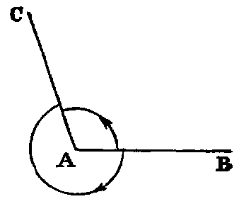
A right line drawn from the vertex and turning about it in the plane of the angle, from the position of coincidence with one leg to that of coincidence with the other, is said to turn through the angle, and the angle is the greater as the quantity of turning is the greater. Again, since the line may turn from one position to the other in either of two ways, two angles are formed by two lines drawn from a point.
Thus if AB, AC be the legs, a line may turn from the position AB to the position AC in the two ways indicated by the arrows. The smaller of the angles thus formed is to be understood as the angle contained by the lines. The larger, called a re-entrant angle, seldom occurs in the “Elements.”
xi. Designation of Angles.—A particular angle in a figure is denoted by three letters, as BAC, of which the middle one, A, is at the vertex, and the other two along the legs. The angle is then read BAC.
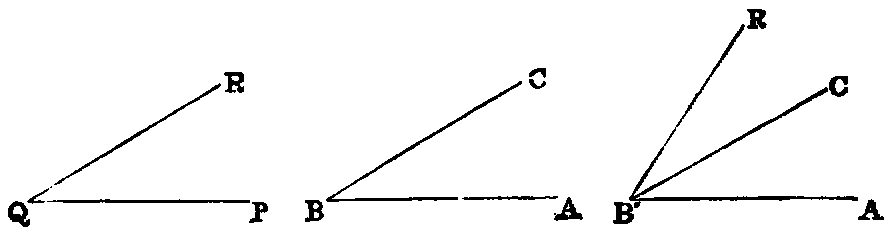
xii. The angle formed by joining two or more angles together is called their sum. Thus the sum of the two angles ABC, PQR is the angle AB′R,
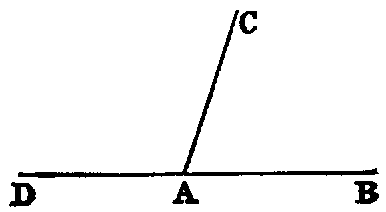
formed by applying the side QP to the side BC, so that the vertex Q shall fall on the vertex B, and the side QR on the opposite side of BC from BA.
xiii. When the sum of two angles BAC, CAD is such that the legs BA, AD form one right line, they are called supplements of each other.
Hence, when one line stands on another, the two angles which it makes on the same side of that on which it stands are supplements of each other.
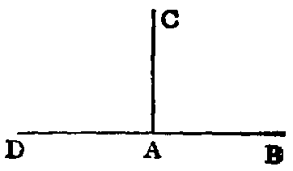
xiv. When one line stands on another, and makes the adjacent angles at both sides of itself equal, each of the angles is called a right angle, and the line which stands on the other is called a perpendicular to it.
Hence a right angle is equal to its supplement.
xv. An acute angle is one which is less than a right angle, as A.
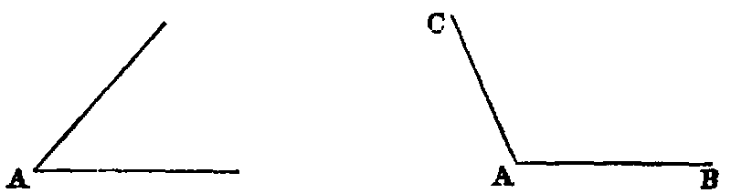
xvi. An obtuse angle is one which is greater than a right angle, as BAC.
The supplement of an acute angle is obtuse, and conversely, the supplement of an obtuse angle is acute.
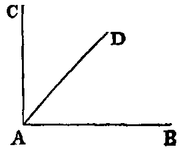
xvii. When the sum of two angles is a right angle, each is called the complement of the other. Thus, if the angle BAC be right, the angles BAD, DAC are complements of each other.
Concurrent Lines.
xviii. Three or more right lines passing through the same point are called concurrent lines.
xix. A system of more than three concurrent lines is called a pencil of lines. Each line of a pencil is called a ray, and the common point through which the rays pass is called the vertex.
The Triangle.
xx. A triangle is a figure formed by three right lines joined end to end. The three lines are called its sides.
xxi. A triangle whose three sides are unequal is said to be scalene, as A; a triangle having two sides equal, to be isosceles, as B; and and having all its sides equal, to be equilateral, as C.
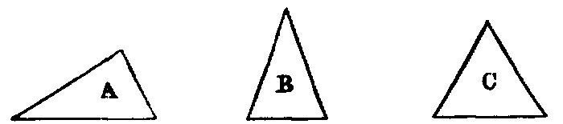
xxii. A right-angled triangle is one that has one of its angles a right angle, as D. The side which subtends the right angle is called the hypotenuse.
xxiii. An obtuse-angled triangle is one that has one of its angles obtuse, as E.
xxiv. An acute-angled triangle is one that has its three angles acute, as F.
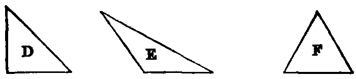
xxv. An exterior angle of a triangle is one that is formed by any side and the continuation of another side.
Hence a triangle has six exterior angles; and also each exterior angle is the supplement of the adjacent interior angle.
The Polygon.
xxvi. A rectilineal figure bounded by more than three right lines is usually called a polygon.
xxvii. A polygon is said to be convex when it has no re-entrant angle.
xxviii. A polygon of four sides is called a quadrilateral.
xxix. A quadrilateral whose four sides are equal is called a lozenge.
xxx. A lozenge which has a right angle is called a square.
xxxi. A polygon which has five sides is called a pentagon; one which has six sides, a hexagon, and so on.
The Circle.
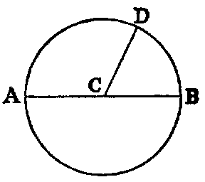
xxxii. A circle is a plane figure formed by a curved line called the circumference, and is such that all right lines drawn from a certain point within the figure to the circumference are equal to one another. This point is called the centre.
xxxiii. A radius of a circle is any right line drawn from the centre to the circumference, such as CD.
xxxiv. A diameter of a circle is a right line drawn through the centre and terminated both ways by the circumference, such as AB.
From the definition of a circle it follows at once that the path of a movable point in a plane which remains at a constant distance from a fixed point is a circle; also that any point P in the plane is inside, outside, or on the circumference of a circle according as its distance from the centre is less than, greater than, or equal to, the radius.
Postulates.
Let it be granted that—
i. A right line may be drawn from any one point to any other point.
When we consider a straight line contained between two fixed points which are its ends, such a portion is called a finite straight line.
ii. A terminated right line may be produced to any length in a right line.
Every right line may extend without limit in either direction or in both. It is in these cases called an indefinite line. By this postulate a finite right line may be supposed to be produced, whenever we please, into an indefinite right line.
iii. A circle may be described from any centre, and with any distance from that centre as radius.
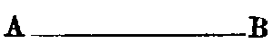
If there be two points A and B, and if with any instruments, such as a ruler and pen, we draw a line from A to B, this will evidently have some irregularities, and also some breadth and thickness. Hence it will not be a geometrical line no matter how nearly it may approach to one. This is the reason that Euclid postulates the drawing of a right line from one point to another. For if it could be accurately done there would be no need for his asking us to let it be granted. Similar observations apply to the other postulates. It is also worthy of remark that Euclid never takes for granted the doing of anything for which a geometrical construction, founded on other problems or on the foregoing postulates, can be given.
Axioms.
i. Things which are equal to the same, or to equals, are equal to each other.
Thus, if there be three things, and if the first, and the second, be each equal to the third, we infer by this axiom that the first is equal to the second. This axiom relates to all kinds of magnitude. The same is true of Axioms ii., iii., iv., v., vi., vii., ix.; but viii., x., xi., xii., are strictly geometrical.
ii. If equals be added to equals the sums will be equal.
iii. If equals be taken from equals the remainders will be equal.
iv. If equals be added to unequals the sums will be unequal.
v. If equals be taken from unequals the remainders will be unequal.
vi. The doubles of equal magnitudes are equal.
vii. The halves of equal magnitudes are equal.
viii. Magnitudes that can be made to coincide are equal.
The placing of one geometrical magnitude on another, such as a line on a line, a triangle on a triangle, or a circle on a circle, &c., is called superposition. The superposition employed in Geometry is only mental, that is, we conceive one magnitude placed on the other; and then, if we can prove that they coincide, we infer, by the present axiom, that they are equal. Superposition involves the following principle, of which, without explicitly stating it, Euclid makes frequent use:—“Any figure may be transferred from one position to another without change of form or size.”
ix. The whole is greater than its part.
This axiom is included in the following, which is a fuller statement:—
ix′. The whole is equal to the sum of all its parts.
x. Two right lines cannot enclose a space.
This is equivalent to the statement, “If two right lines have two points common to both, they coincide in direction,” that is, they form but one line, and this holds true even when one of the points is at infinity.
xi. All right angles are equal to one another.
This can be proved as follows:—Let there be two right lines AB, CD, and two perpendiculars to them, namely, EF, GH, then if AB, CD be made to coincide by superposition, so that the point E will coincide with G; then since a right angle is equal to its supplement, the line EF must coincide with GH. Hence the angle AEF is equal to CGH.
xii. If two right lines (AB, CD) meet a third line (AC), so as to make the sum of the two interior angles (BAC, ACD) on the same side less than two right angles, these lines being produced shall meet at some finite distance.
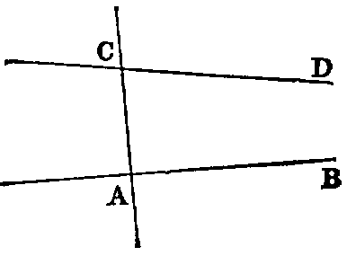
This axiom is the converse of Prop. xvii., Book I.
Explanation of Terms.
Axioms.—“Elements of human reason,” according to Dugald Stewart, are certain general propositions, the truths of which are self-evident, and which are so fundamental, that they cannot be inferred from any propositions which are more elementary; in other words, they are incapable of demonstration. “That two sides of a triangle are greater than the third” is, perhaps, self-evident; but it is not an axiom, inasmuch as it can be inferred by demonstration from other propositions; but we can give no proof of the proposition that “things which are equal to the same are equal to one another,” and, being self-evident, it is an axiom.
Propositions which are not axioms are properties of figures obtained by processes of reasoning. They are divided into theorems and problems.
A Theorem is the formal statement of a property that may be demonstrated from known propositions. These propositions may themselves be theorems or axioms. A theorem consists of two parts, the hypothesis, or that which is assumed, and the conclusion, or that which is asserted to follow therefrom. Thus, in the typical theorem,
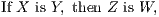
the hypothesis is that X is Y , and the conclusion is that Z is W.
Converse Theorems.—Two theorems are said to be converse, each of the other, when the hypothesis of either is the conclusion of the other. Thus the converse of the theorem (i.) is—
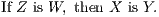
From the two theorems (i.) and (ii.) we may infer two others, called their contrapositives. Thus the contrapositive
| of (i.) is, If Z is not W, then X is not Y ; | (iii.) | |
|---|---|---|
| of (ii.) is, If X is not Y , then Z is not W. | (iv.) |
The theorem (iv.) is called the obverse of (i.), and (iii.) the obverse of (ii.).
A Problem is a proposition in which something is proposed to be done, such as a line to be drawn, or a figure to be constructed, under some given conditions.
The Solution of a problem is the method of construction which accomplishes the required end.
The Demonstration is the proof, in the case of a theorem, that the conclusion follows from the hypothesis; and in the case of a problem, that the construction accomplishes the object proposed.
The Enunciation of a problem consists of two parts, namely, the data, or things supposed to be given, and the quaesita, or things required to be done.
Postulates are the elements of geometrical construction, and occupy the same relation with respect to problems as axioms do to theorems.
A Corollary is an inference or deduction from a proposition.
A Lemma is an auxiliary proposition required in the demonstration of a principal proposition.
A Secant or Transversal is a line which cuts a system of lines, a circle, or any other geometrical figure.
Congruent figures are those that can be made to coincide by superposition. They agree in shape and size, but differ in position. Hence it follows, by Axiom viii., that corresponding parts or portions of congruent figures are congruent, and that congruent figures are equal in every respect.
Rule of Identity.—Under this name the following principle will be sometimes referred to:—“If there is but one X and one Y , then, from the fact that X is Y , it necessarily follows that Y is X.”—Syllabus.
PROP. I.—Problem.
On a given finite right line (AB) to construct an equilateral triangle.
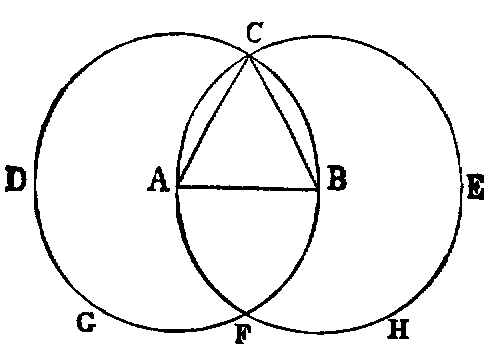
Sol.—With A as centre, and AB as radius, describe the circle BCD (Post. iii.). With B as centre, and BA as radius, describe the circle ACE, cutting the former circle in C. Join CA, CB (Post. i.). Then ABC is the equilateral triangle required.
Dem.—Because A is the centre of the circle BCD, AC is equal to AB (Def. xxxii.). Again, because B is the centre of the circle ACE, BC is equal to BA. Hence we have proved.
| AC | = AB, | ||||||||||
|---|---|---|---|---|---|---|---|---|---|---|---|
| and | BC | = AB. |
But things which are equal to the same are equal to one another (Axiom i.); therefore AC is equal to BC; therefore the three lines AB, BC, CA are equal to one another. Hence the triangle ABC is equilateral (Def. xxi.); and it is described on the given line AB, which was required to be done.
Questions for Examination.
1. What is the datum in this proposition?
2. What is the quaesitum?
3. What is a finite right line?
4. What is the opposite of finite?
5. In what part of the construction is the third postulate quoted? and for what purpose? Where is the first postulate quoted?
6. Where is the first axiom quoted?
7. What use is made of the definition of a circle? What is a circle?
8. What is an equilateral triangle?
Exercises.
The following exercises are to be solved when the pupil has mastered the First Book:—
1. If the lines AF, BF be joined, the figure ACBF is a lozenge.
2. If AB be produced to D and E, the triangles CDF and CEF are equilateral.
3. If CA, CB be produced to meet the circles again in G and H, the points G, F, H are collinear, and the triangle GCH is equilateral.
4. If CF be joined, CF2 = 3AB2.
5. Describe a circle in the space ACB, bounded by the line AB and the two circles.
PROP. II.—Problem.
From a given point (A) to draw a right line equal to a given finite right line (BC).
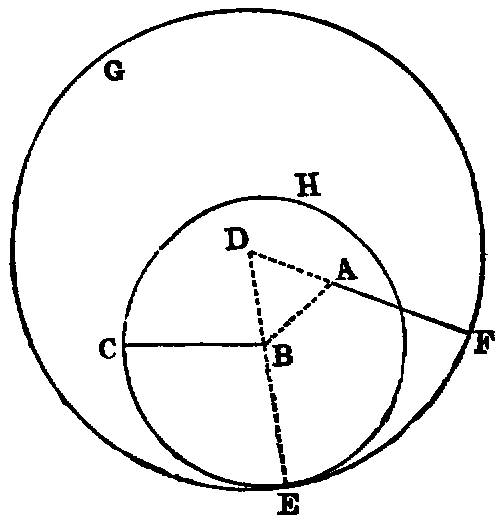
Sol.—Join AB (Post. i.); on AB describe the equilateral triangle ABD [i.]. With B as centre, and BC as radius, describe the circle ECH (Post iii.). Produce DB to meet the circle ECH in E (Post. ii.). With D as centre, and DE as radius, describe the circle EFG (Post. iii.). Produce DA to meet this circle in F. AF is equal to BC.
Dem.—Because D is the centre of the circle EFG, DF is equal to DE (Def. xxxii.). And because DAB is an equilateral triangle, DA is equal to DB (Def. xxi.). Hence we have
| DF = DE, | |||||||||||
|---|---|---|---|---|---|---|---|---|---|---|---|
| and | DA = DB; |
and taking the latter from the former, the remainder AF is equal to the remainder BE (Axiom iii.). Again, because B is the centre of the circle ECH, BC is equal to BE; and we have proved that AF is equal to BE; and things which are equal to the same thing are equal to one another (Axiom i.). Hence AF is equal to BC. Therefore from the given point A the line AF has been drawn equal to BC.
It is usual with commentators on Euclid to say that he allows the use of the rule and compass. Were such the case this Proposition would have been unnecessary. The fact is, Euclid’s object was to teach Theoretical and not Practical Geometry, and the only things he postulates are the drawing of right lines and the describing of circles. If he allowed the mechanical use of the rule and compass he could give methods of solving many problems that go beyond the limits of the “geometry of the point, line, and circle.”—See Notes D, F at the end of this work.
Exercises.
1. Solve the problem when the point A is in the line BC itself.
2. Inflect from a given point A to a given line BC a line equal to a given line. State the number of solutions.
PROP. III.—Problem.
From the greater (AB) of two given right lines to cut off a part equal to (C) the less.
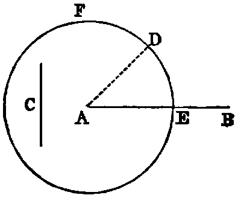
Sol.—From A, one of the extremities of AB, draw the right line AD equal to C [ii.]; and with A as centre, and AD as radius, describe the circle EDF (Post. iii.) cutting AB in E. AE shall be equal to C.
Dem.—Because A is the centre of the circle EDF, AE is equal to AD (Def. xxxii.), and C is equal to AD (const.); and things which are equal to the same are equal to one another (Axiom i.); therefore AE is equal to C. Wherefore from AB, the greater of the two given lines, a part, AE, has been out off equal to C, the less.
Questions for Examination.
1. What previous problem is employed in the solution of this?
2. What postulate?
3. What axiom in the demonstration?
4. Show how to produce the less of two given lines until the whole produced line becomes equal to the greater.
PROP. IV.—Theorem.
If two triangles (BAC, EDF) have two sides (BA, AC) of one equal respectively to two sides (ED, DF) of the other, and have also the angles (A, D) included by those sides equal, the triangles shall be equal in every respect—that is, their bases or third sides (BC, EF) shall be equal, and the angles (B, C) at the base of one shall be respectively equal to the angles (E, F) at the base of the other; namely, those shall be equal to which the equal sides are opposite.
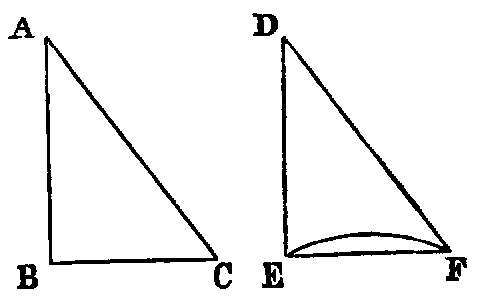
Dem.—Let us conceive the triangle BAC to be applied to EDF, so that the point A shall coincide with D, and the line AB with DE, and that the point C shall be on the same side of DE as F; then because AB is equal to DE, the point B shall coincide with E. Again, because the angle BAC is equal to the angle EDF, the line AC shall coincide with DF; and since AC is equal to DF (hyp.), the point C shall coincide with F; and we have proved that the point B coincides with E. Hence two points of the line BC coincide with two points of the line EF; and since two right lines cannot enclose a space, BC must coincide with EF. Hence the triangles agree in every respect; therefore BC is equal to EF, the angle B is equal to the angle E, the angle C to the angle F, and the triangle BAC to the triangle EDF.
Questions for Examination.
1. How many parts in the hypothesis of this Proposition? Ans. Three. Name them.
2. How many in the conclusion? Name them.
3. What technical term is applied to figures which agree in everything but position? Ans. They are said to be congruent.
4. What is meant by superposition?
5. What axiom is made use of in superposition?
6. How many parts in a triangle? Ans. Six; namely, three sides and three angles.
7. When it is required to prove that two triangles are congruent, how many parts of one must be given equal to corresponding parts of the other? Ans. In general, any three except the three angles. This will be established in Props. viii. and xxvi., taken along with iv.
8. What property of two lines having two common points is quoted in this Proposition? They must coincide.
Exercises.
1. The line that bisects the vertical angle of an isosceles triangle bisects the base perpendicularly.
2. If two adjacent sides of a quadrilateral be equal, and the diagonal bisects the angle between them, their other sides are equal.
3. If two lines be at right angles, and if each bisect the other, then any point in either is equally distant from the extremities of the other.
4. If equilateral triangles be described on the sides of any triangle, the distances between the vertices of the original triangle and the opposite vertices of the equilateral triangles are equal. (This Proposition should be proved after the student has read Prop. xxxii.)
PROP. V.—Theorem.
The angles (ABC, ACB) at the base (BC) of an isosceles triangle are equal to one another, and if the equal sides (AB, AC) be produced, the external angles (DBC, ECB) below the base shall be equal.
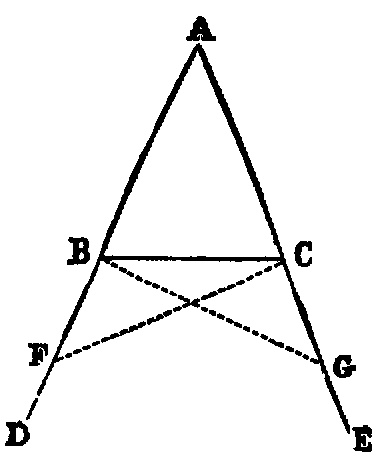
Dem.—In BD take any point F, and from AE, the greater, cut off AG equal to AF [iii]. Join BG, CF (Post. i.). Because AF is equal to AG (const.), and AC is equal to AB (hyp.), the two triangles FAC, GAB have the sides FA, AC in one respectively equal to the sides GA, AB in the other; and the included angle A is common to both triangles. Hence [iv.] the base FC is equal to GB, the angle AFC is equal to AGB, and the angle ACF is equal to the angle ABG.
Again, because AF is equal to AG (const.), and AB to AC (hyp.), the remainder, BF, is equal to CG (Axiom iii); and we have proved that FC is equal to GB, and the angle BFC equal to the angle CGB. Hence the two triangles BFC, CGB have the two sides BF, FC in one equal to the two sides CG, GB in the other; and the angle BFC contained by the two sides of one equal to the angle CGB contained by the two sides of the other. Therefore [iv.] these triangles have the angle FBC equal to the angle GCB, and these are the angles below the base. Also the angle FCB equal to GBC; but the whole angle FCA has been proved equal to the whole angle GBA. Hence the remaining angle ACB is equal to the remaining angle ABC, and these are the angles at the base.
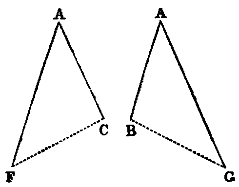
Observation.—The great difficulty which beginners find in this Proposition is due to the fact that the two triangles ACF, ABG overlap each other. The teacher should make these triangles separate, as in the annexed diagram, and point out the corresponding parts thus:—
| AF | = AG, | ||
|---|---|---|---|
| AC | = AB; | ||
| angle FAC | = angle GAB. |
| Hence [iv.], | angle ACF | = angle ABG. | |||||||||
|---|---|---|---|---|---|---|---|---|---|---|---|
| and | angle AFC | = angle AGB. |
The student should also be shown how to apply one of the triangles to the other, so as to bring them into coincidence. Similar Illustrations may be given of the triangles BFC, CGB.
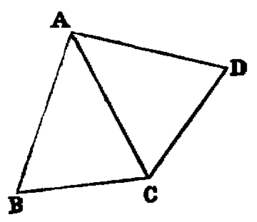
The following is a very easy proof of this Proposition. Conceive the △ ACB to be turned, without alteration, round the line AC, until it falls on the other side. Let ACD be its new position; then the angle ADC of the displaced triangle is evidently equal to the angle ABC, with which it originally coincided. Again, the two △s BAC, CAD have the sides BA, AC of one respectively equal to the sides AC, AD of the other, and the included angles equal; therefore [iv.] the angle ACB opposite to the side AB is equal to the angle ADC opposite to the side AC; but the angle ADC is equal to ABC; therefore ACB is equal to ABC.
Cor.—Every equilateral triangle is equiangular.
Def.—A line in any figure, such as AC in the preceding diagram, which is such that, by folding the plane of the figure round it, one part of the diagram will coincide with the other, is called an axis of symmetry of the figure.
Exercises.
1. Prove that the angles at the base are equal without producing the sides. Also by producing the sides through the vertex.
2. Prove that the line joining the point A to the intersection of the lines CF and BG is an axis of symmetry of the figure.
3. If two isosceles triangles be on the same base, and be either at the same or at opposite sides of it, the line joining their vertices is an axis of symmetry of the figure formed by them.
4. Show how to prove this Proposition by assuming as an axiom that every angle has a bisector.
5. Each diagonal of a lozenge is an axis of symmetry of the lozenge.
6. If three points be taken on the sides of an equilateral triangle, namely, one on each side, at equal distances from the angles, the lines joining them form a new equilateral triangle.
PROP. VI.—Theorem.
If two angles (B, C) of a triangle be equal, the sides (AC, AB) opposite to them are also equal.
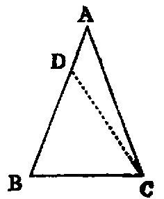
Dem.—If AB, AC are not equal, one must be greater than the other. Suppose AB is the greater, and that the part BD is equal to AC. Join CD (Post. i.). Then the two triangles DBC, ACB have BD equal to AC, and BC common to both. Therefore the two sides DB, BC in one are equal to the two sides AC, CB in the other; and the angle DBC in one is equal to the angle ACB in the other (hyp). Therefore [iv.] the triangle DBC is equal to the triangle ACB—the less to the greater, which is absurd; hence AC, AB are not unequal, that is, they are equal.
Questions for Examination.
1. What is the hypothesis in this Proposition?
2. What Proposition is this the converse of?
3. What is the obverse of this Proposition?
4. What is the obverse of Prop. v.?
5. What is meant by an indirect proof?
6. How does Euclid generally prove converse Propositions?
7. What false assumption is made in the demonstration?
8. What does this assumption lead to?
PROP. VII—Theorem.
If two triangles (ACB, ADB) on the same base (AB) and on the same side of it have one pair of conterminous sides (AC, AD) equal to one another, the other pair of conterminous sides (BC, BD) must be unequal.
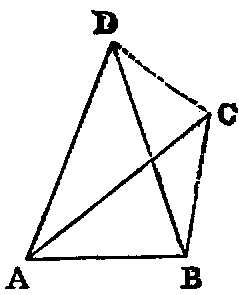
Dem.—1. Let the vertex of each triangle be without the other. Join CD. Then because AD is equal to AC (hyp.), the triangle ACD is isosceles; therefore [v.] the angle ACD is equal to the angle ADC; but ADC is greater than BDC (Axiom ix.); therefore ACD is greater than BDC: much, more is BCD greater than BDC. Now if the side BD were equal to BC, the angle BCD would be equal to BDC [v.]; but it has been proved to be greater. Hence BD is not equal to BC.
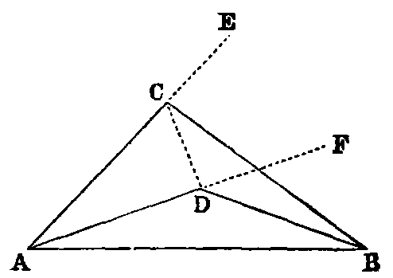
2. Let the vertex of one triangle ADB fall within the other triangle ACB. Produce the sides AC, AD to E and F. Then because AC is equal to AD (hyp.), the triangle ACD is isosceles, and [v.] the external angles ECD, FDC at the other side of the base CD are equal; but ECD is greater than BCD (Axiom ix.). Therefore FDC is greater than BCD: much more is BDC greater than BCD; but if BC were equal to BD, the angle BDC would be equal to BCD [v.]; therefore BC cannot be equal to BD.
3. If the vertex D of the second triangle fall on the line BC, it is evident that BC and BD are unequal.
Questions for Examination.
1. What use is made of Prop. vii.? Ans. As a lemma to Prop. viii.
2. In the demonstration of Prop. vii. the contrapositive of Prop. v. occurs; show where.
3. Show that two circles can intersect each other only in one point on the same side of the line joining their centres, and hence that two circles cannot have more than two points of intersection.
PROP. VIII.—Theorem.
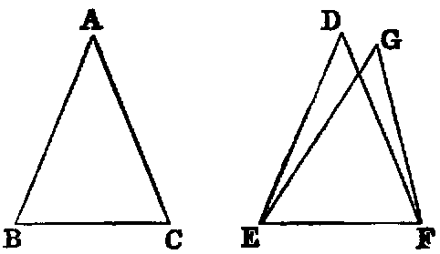
If two triangles (ABC, DEF) have two sides (AB, AC) of one respectively equal to two sides (DE, DF) of the other, and have also the base (BC) of one equal to the base (EF) of the other; then the two triangles shall be equal, and the angles of one shall be respectively equal to the angles of the other—namely, those shall be equal to which the equal sides are opposite.
Dem.—Let the triangle ABC be applied to DEF, so that the point B will coincide with E, and the line BC with the line EF; then because BC is equal to EF, the point C shall coincide with F. Then if the vertex A fall on the same side of EF as the vertex D, the point A must coincide with D; for if not, let it take a different position G; then we have EG equal to BA, and BA is equal to ED (hyp.). Hence (Axiom i.) EG is equal to ED: in like manner, FG is equal to FD, and this is impossible [vii.]. Hence the point A must coincide with D, and the triangle ABC agrees in every respect with the triangle DEF; and therefore the three angles of one are respectively equal to the three angles of the other—namely, A to D, B to E, and C to F, and the two triangles are equal.
This Proposition is the converse of iv., and is the second case of the congruence of triangles in the Elements.
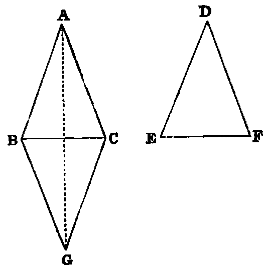
Philo’s Proof.—Let the equal bases be applied as in the foregoing proof, but let the vertices be on the opposite sides; then let BGC be the position which EDF takes. Join AG. Then because BG = BA, the angle BAG = BGA. In like manner the angle CAG = CGA. Hence the whole angle BAC = BGC; but BGC = EDF therefore BAC = EDF.
PROP. IX.—Problem.
To bisect a given rectilineal angle (BAC).
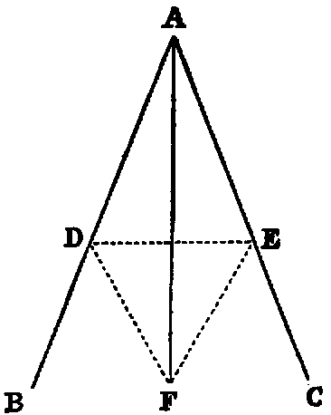
Sol.—In AB take any point D, and cut off [iii.] AE equal to AD. Join DE (Post. i.), and upon it, on the side remote from A, describe the equilateral triangle DEF [i.] Join AF. AF bisects the given angle BAC.
Dem.—The triangles DAF, EAF have the side AD equal to AE (const.) and AF common; therefore the two sides DA, AF are respectively equal to EA, AF, and the base DF is equal to the base EF, because they are the sides of an equilateral triangle (Def. xxi.). Therefore [viii.] the angle DAF is equal to the angle EAF; hence the angle BAC is bisected by the line AF.
Cor.—The line AF is an axis of symmetry of the figure.
Questions for Examination.
1. Why does Euclid describe the equilateral triangle on the side remote from A?
2. In what case would the construction fail, if the equilateral triangle were described on the other side of DE?
Exercises.
1. Prove this Proposition without using Prop. viii.
2. Prove that AF is perpendicular to DE.
3. Prove that any point in AF is equally distant from the points D and E.
4. Prove that any point in AF is equally distant from the lines AB, AC.
PROP. X.—Problem.
To bisect a given finite right line (AB).
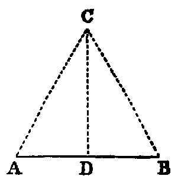
Sol.—Upon AB describe an equilateral triangle ACB [i.]. Bisect the angle ACB by the line CD [ix.], meeting AB in D, then AB is bisected in D.
Dem.—The two triangles ACD, BCD, have the side AC equal to BC, being the sides of an equilateral triangle, and CD common. Therefore the two sides AC, CD in one are equal to the two sides BC, CD in the other; and the angle ACD is equal to the angle BCD (const.). Therefore the base AD is equal to the base DB [iv.]. Hence AB is bisected in D.
Exercises.
1. Show how to bisect a finite right line by describing two circles.
2. Every point equally distant from the points A, B is in the line CD.
PROP. XI.—Problem.
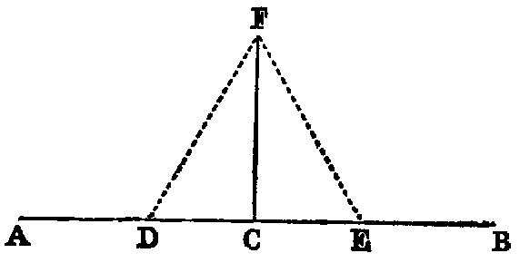
From a given point (C) in a given right line (AB) to draw a right line perpendicular to the given line.
Sol.—In AC take any point D, and make CE equal to CD [iii.]. Upon DE describe an equilateral triangle DFE [i.]. Join CF. Then CF shall be at right angles to AB.
Dem.—The two triangles DCF, ECF have CD equal to CE (const.) and CF common; therefore the two sides CD, CF in one are respectively equal to the two sides CE, CF in the other, and the base DF is equal to the base EF, being the sides of an equilateral triangle (Def. xxi.); therefore [viii.] the angle DCE is equal to the angle ECF, and they are adjacent angles. Therefore (Def. xiii.) each of them is a right angle, and CF is perpendicular to AB at the point C.
Exercises.
1. The diagonals of a lozenge bisect each other perpendicularly.
2. Prove Prop. xi. without using Prop. viii.
3. Erect a line at right angles to a given line at one of its extremities without producing the line.
4. Find a point in a given line that shall be equally distant from two given points.
5. Find a point in a given line such that, if it be joined to two given points on opposite sides of the line, the angle formed by the joining lines shall be bisected by the given line.
6. Find a point that shall be equidistant from three given points.
PROP. XII.—Problem.
To draw a perpendicular to a given indefinite right line (AB) from a given point (C) without it.
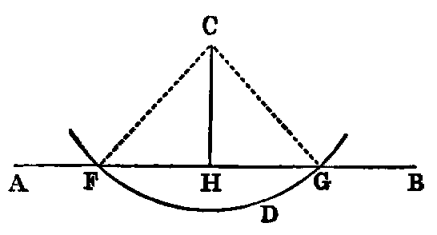
Sol.—Take any point D on the other side of AB, and describe (Post. iii.) a circle, with C as centre, and CD as radius, meeting AB in the points F and G. Bisect FG in H [x.]. Join CH (Post. i.). CH shall be at right angles to AB.
Dem.—Join CF, CG. Then the two triangles FHC, GHC have FH equal to GH (const.), and HC common; and the base CF equal to the base CG, being radii of the circle FDG (Def. xxxii.). Therefore the angle CHF is equal to the angle CHG [viii.], and, being adjacent angles, they are right angles (Def. xiii.). Therefore CH is perpendicular to AB.
Exercises.
1. Prove that the circle cannot meet AB in more than two points.
2. If one angle of a triangle be equal to the sum of the other two, the triangle can be divided into the sum of two isosceles triangles, and the base is equal to twice the line from its middle point to the opposite angle.
PROP. XIII.—Theorem.
The adjacent angles (ABC, ABD) which one right line (AB) standing on another (CD) makes with it are either both right angles, or their sum is equal to two right angles.
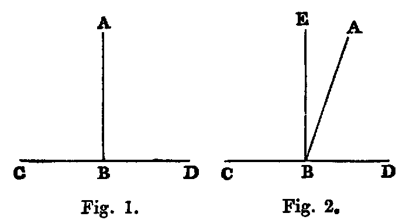
Dem.—If AB is perpendicular to CD, as in fig. 1, the angles ABC, ABD are right angles. If not, draw BE perpendicular to CD [xi.]. Now the angle CBA is equal to the sum of the two angles CBE, EBA (Def. xi.). Hence, adding the angle ABD, the sum of the angles CBA, ABD is equal to the sum of the three angles CBE, EBA, ABD. In like manner, the sum of the angles CBE, EBD is equal to the sum of the three angles CBE, EBA, ABD. And things which are equal to the same are equal to one another. Therefore the sum of the angles CBA, ABD is equal to the sum of the angles CBE, EBD; but CBE, EBD are right angles; therefore the sum of the angles CBA, ABD is two right angles.
Or thus: Denote the angle EBA by θ; then evidently
| the angle | CBA | = right angle + θ; |
|---|---|---|
| the angle | ABD | = right angle − θ; |
| therefore | CBA + ABD | = two right angles. |
Cor. 1.—The sum of two supplemental angles is two right angles.
Cor. 2.—Two right lines cannot have a common segment.
Cor. 3.—The bisector of any angle bisects the corresponding re-entrant angle.
Cor. 4.—The bisectors of two supplemental angles are at right angles to each other.
Cor. 5.—The angle EBA is half the difference of the angles CBA, ABD.
PROP. XIV.–Theorem.
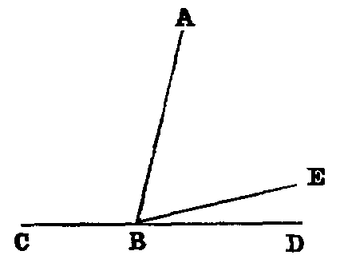
If at a point (B) in a right line (BA) two other right lines (CB, BD) on opposite sides make the adjacent angles (CBA, ABD) together equal to two right angles, these two right lines form one continuous line.
Dem.—If BD be not the continuation of CB, let BE be its continuation. Now, since CBE is a right line, and BA stands on it, the sum of the angles CBA, ABE is two right angles (xiii.); and the sum of the angles CBA, ABD is two right angles (hyp.); therefore the sum of the angles CBA, ABE is equal to the sum of the angles CBA, ABD. Reject the angle CBA, which is common, and we have the angle ABE equal to the angle ABD—that is, a part equal to the whole—which is absurd. Hence BD must be in the same right line with CB.
PROP. XV.—Theorem.
If two right lines (AB, CD) intersect one another, the opposite angles are equal (CEA = DEB, and BEC = AED).
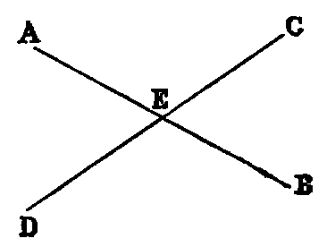
Dem.—Because the line AE stands on CD, the sum of the angles CEA, AED is two right angles [xiii.]; and because the line CE stands on AB, the sum of the angles BEC, CEA is two right angles; therefore the sum of the angles CEA, AED is equal to the sum of the angles BEC, CEA. Reject the angle CEA, which is common, and we have the angle AED equal to BEC. In like manner, the angle CEA is equal to DEB.
The foregoing proof may be briefly given, by saying that opposite angles are equal because they have a common supplement.
Questions for Examination on Props. XIII., XIV., XV.
1. What problem is required in Euclid’s proof of Prop. xiii.?
2. What theorem? Ans. No theorem, only the axioms.
3. If two lines intersect, how many pairs of supplemental angles do they make?
4. What relation does Prop. xiv. bear to Prop. xiii.?
5. What three lines in Prop. xiv. are concurrent?
6. What caution is required in the enunciation of Prop. xiv.?
7. State the converse of Prop. xv. Prove it.
8. What is the subject of Props. xiii., xiv., xv.? Ans. Angles at a point.
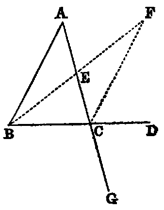
PROP. XVI.—Theorem.
If any side (BC) of a triangle (ABC) be produced, the exterior angle (ACD) is greater than either of the interior non-adjacent angles.
Dem.—Bisect AC in E [x.]. Join BE (Post. i.). Produce it, and from the produced part cut off EF equal to BE [iii]. Join CF. Now because EC is equal to EA (const.), and EF is equal to EB, the triangles CEF, AEB have the sides CE, EF in one equal to the sides AE, EB in the other; and the angle CEF equal to AEB [xv.]. Therefore [iv.] the angle ECF is equal to EAB; but the angle ACD is greater than ECF; therefore the angle ACD is greater than EAB.
In like manner it may be shown, if the side AC be produced, that the exterior angle BCG is greater than the angle ABC; but BCG is equal to ACD [xv.]. Hence ACD is greater than ABC. Therefore ACD is greater than either of the interior non-adjacent angles A or B of the triangle ABC.
Cor. 1.—The sum of the three interior angles of the triangle BCF is equal to the sum of the three interior angles of the triangle ABC.
Cor. 2.—The area of BCF is equal to the area of ABC.
Cor. 3.—The lines BA and CF, if produced, cannot meet at any finite distance. For, if they met at any finite point X, the triangle CAX would have an exterior angle BAC equal to the interior angle ACX.
PROP. XVII.—Theorem.
Any two angles (B, C) of a triangle (ABC) are together less than two right angles.
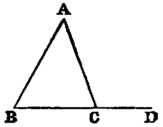
Dem.—Produce BC to D; then the exterior angle ACD is greater than ABC [xvi.]: to each add the angle ACB, and we have the sum of the angles ACD, ACB greater than the sum of the angles ABC, ACB; but the sum of the angles ACD, ACB is two right angles [xiii.]. Therefore the sum of the angles ABC, ACB is less than two right angles.
In like manner we may show that the sum of the angles A, B, or of the angles A, C, is less than two right angles.
Cor. 1.—Every triangle must have at least two acute angles.
Cor. 2.—If two angles of a triangle be unequal, the lesser must be acute.
Exercise.
Prove Prop. xvii. without producing a side.
PROP. XVIII.—Theorem.
If in any triangle (ABC) one side (AC) be greater than another (AB), the angle opposite to the greater side is grater than the angle opposite to the less.
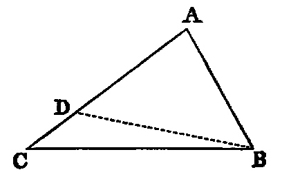
Dem.—From AC cut off AD equal to AB [iii]. Join BD (Post. i.). Now since AB is equal to AD, the triangle ABD is isosceles; therefore [v.] the angle ADB is equal to ABD; but the angle ADB is greater than the angle ACB [xvi.]; therefore ABD is greater than ACB. Much more is the angle ABC greater than the angle ACB.
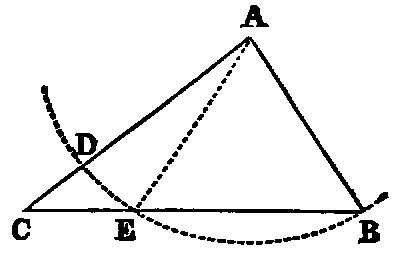
Or thus: From A as centre, with the lesser side AB as radius, describe the circle BED, cutting BC in E. Join AE. Now since AB is equal to AE, the angle AEB is equal to ABE; but AEB is greater than ACB (xvi.); therefore ABE is greater than ACB.
Exercises.
1. If in the second method the circle cut the line CB produced through B, prove the Proposition.
2. This Proposition may be proved by producing the less side.
3. If two of the opposite sides of a quadrilateral be respectively the greatest and least, the angles adjacent to the least are greater than their opposite angles.
4. In any triangle, the perpendicular from the vertex opposite the side which is not less than either of the remaining sides falls within the triangle.
PROP. XIX.—Theorem.
If one angle (B) of a triangle (ABC) be greater than another angle (C), the side (AC) which it opposite to the greater angle is greater than the side (AB) which is opposite to the less.
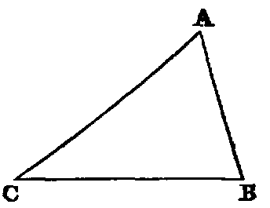
Dem.—If AC be not greater than AB, it must be either equal to it or less than it. Let us examine each case:—
1. If AC were equal to AB, the triangle ACB would be isosceles, and then the angle B would be equal to C [v.]; but it is not by hypothesis; therefore AB is not equal to AC.
2. If AC were less than AB, the angle B would be less than the angle C [xviii.]; but it is not by hypothesis; therefore AC is not less than AB; and since AC is neither equal to AB nor less than it, it must be greater.
Exercises.
1. Prove this Proposition by a direct demonstration.
2. A line from the vertex of an isosceles triangle to any point in the base is less than either of the equal sides, but greater if the point be in the base produced.
3. Three equal lines could not be drawn from the same point to the same line.
4. The perpendicular is the least line which can be drawn from a given point to a given line; and of all others that may be drawn to it, that which is nearest to the perpendicular is less than any one more remote.
5. If in the fig., Prop. xvi., AB be the greatest side of the △ ABC, BF is the greatest side of the △ FBC, and the angle BFC is less than half the angle ABC.
6. If ABC be a △ having AB not greater than AC, a line AG, drawn from A to any point G in BC, is less than AC. For the angle ACB [xviii.] is not greater than ABC; but AGC [xvi.] is greater than ABC; therefore AGC is greater than ACG. Hence AC is greater than AG.
PROP. XX.—Theorem.
The sum of any two sides (BA, AC) of a triangle (ABC) is greater than the third.
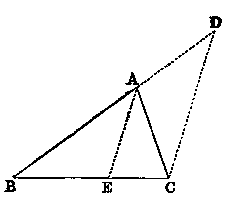
Dem.—Produce BA to D (Post. ii.), and make AD equal to AC [iii.]. Join CD. Then because AD is equal to AC, the angle ACD is equal to ADC (v.); therefore the angle BCD is greater than the angle BDC; hence the side BD opposite to the greater angle is greater than BC opposite to the less [xix.]. Again, since AC is equal to AD, adding BA to both, we have the sum of the sides BA, AC equal to BD. Therefore the sum of BA, AC is greater than BC.
Or thus: Bisect the angle BAC by AE [ix.] Then the angle BEA is greater than EAC; but EAC = EAB (const.); therefore the angle BEA is greater than EAB. Hence AB is greater than BE [xix.]. In like manner AC is greater than EC. Therefore the sum of BA, AC is greater than BC.
Exercises.
1. In any triangle, the difference between any two sides is less than the third.
2. If any point within a triangle be joined to its angular points, the sum of the joining lines is greater than its semiperimeter.
3. If through the extremities of the base of a triangle, whose sides are unequal, lines be drawn to any point in the bisector of the vertical angle, their difference is less than the difference of the sides.
4. If the lines be drawn to any point in the bisector of the external vertical angle, their sum is greater than the sum of the sides.
5. Any side of any polygon is less than the sum of the remaining sides.
6. The perimeter of any triangle is greater than that of any inscribed triangle, and less than that of any circumscribed triangle.
7. The perimeter of any polygon is greater than that of any inscribed, and less than that of any circumscribed, polygon of the same number of sides.
8. The perimeter of a quadrilateral is greater than the sum of its diagonals.
Def.—A line drawn from any angle of a triangle to the middle point of the opposite side is called a median of the triangle.
9. The sum of the three medians of a triangle is less than its perimeter.
10. The sum of the diagonals of a quadrilateral is less than the sum of the lines which can be drawn to its angular points from any point except the intersection of the diagonals.
PROP. XXI.—Theorem.
If two lines (BD, CD) be drawn to a point (D) within a triangle from the extremities of its base (BC), their sum is less than the sum of the remaining sides (BA, CA), but they contain a greater angle.
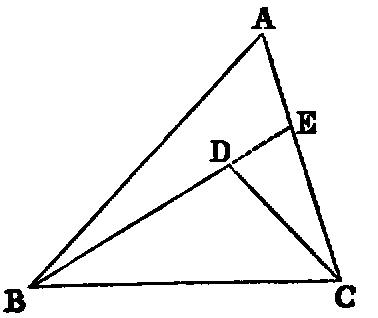
Dem.—1. Produce BD (Post. ii.) to meet AC in E. Then, in the triangle BAE, the sum of the sides BA, AE is greater than the side BE [xx.]: to each add EC, and we have the sum of BA, AC greater than the sum of BE, EC. Again, the sum of the sides DE, EC of the triangle DEC is greater than DC: to each add BD, and we get the sum of BE, EC greater than the sum of BD, DC; but it has been proved that the sum of BA, AC is greater than the sum of BE, EC. Therefore much more is the sum of BA, AC greater than the sum of BD, DC.
2. The external angle BDC of the triangle DEC is greater than the internal angle BEC [xvi.], and the angle BEC, for a like reason, is greater than BAC. Therefore much more is BDC greater than BAC.
Part 2 may be proved without producing either of the sides BD, DC. Thus: join AD and produce it to meet BC in F; then the angle BDF is greater than the angle BAF [xvi.], and FDC is greater than FAC. Therefore the whole angle BDC is greater than BAC.
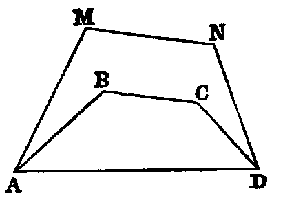
Exercises.
1. The sum of the lines drawn from any point within a triangle to its angular points is less than the perimeter. (Compare Ex. 2, last Prop.)
2. If a convex polygonal line ABCD lie within a convex polygonal line AMND terminating in the same extremities, the length of the former is less than that of the latter.
PROP. XXII.—Problem.
To construct a triangle whose three sides shall be respectively equal to three given lines (A, B, C), the sum of every two of which is greater than the third.
Sol.—Take any right line DE, terminated at D, but unlimited towards E, and cut off [iii.] DF equal to A, FG equal to B, and GH equal to C. With F as centre, and FD as radius, describe the circle KDL (Post. iii.); and with G as centre, and GH as radius, describe the circle KHL, intersecting the former circle in K. Join KF, KG. KFG is the triangle required.
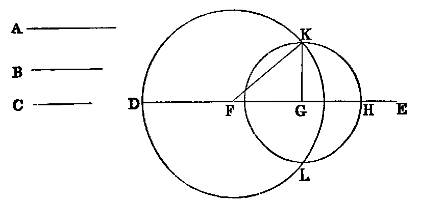
Dem.—Since F is the centre of the circle KDL, FK is equal to FD; but FD is equal to A (const.); therefore (Axiom i.) FK is equal to A. In like manner GK is equal to C, and FG is equal to B (const.) Hence the three sides of the triangle KFG are respectively equal to the three lines A, B, C.
Questions for Examination.
1. What is the reason for stating in the enunciation that the sum of every two of the given lines must be greater than the third?
2. Prove that when that condition is fulfilled the two circles must intersect.
3. Under what conditions would the circles not intersect?
4. If the sum of two of the lines were equal to the third, would the circles meet? Prove that they would not intersect.
PROP. XXIII.—Problem.
At a given point (A) in a given right line (AB) to make an angle equal to a given rectilineal angle (DEF).
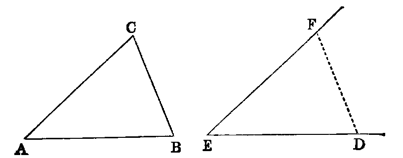
Sol.—In the sides ED, EF of the given angle take any arbitrary points D and F. Join DF, and construct [xxii.] the triangle BAC, whose sides, taken in order, shall be equal to those of DEF—namely, AB equal to ED, AC equal to EF, and CB equal to FD; then the angle BAC will [viii.] be equal to DEF. Hence it is the required angle.
Exercises.
1. Construct a triangle, being given two sides and the angle between them.
2. Construct a triangle, being given two angles and the side between them.
3. Construct a triangle, being given two sides and the angle opposite to one of them.
4. Construct a triangle, being given the base, one of the angles at the base, and the sum or difference of the sides.
5. Given two points, one of which is in a given line, it is required to find another point in the given line, such that the sum or difference of its distances from the former points may be given. Show that two such points may be found in each case.
PROP. XXIV.—Theorem.
If two triangles (ABC, DEF) have two sides (AB, AC) of one respectively equal to two sides (DE, DF) of the other, but the contained angle (BAC) of one greater than the contained angle (EDF) of the other, the base of that which has the greater angle is greater than the base of the other.
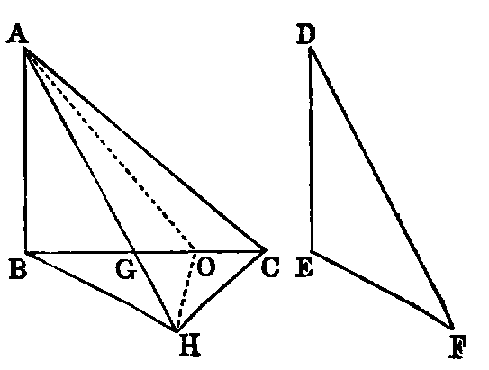
Dem.—Of the two sides AB, AC, let AB be the one which is not the greater, and with it make the angle BAG equal to EDF [xxiii.]. Then because AB is not greater than AC, AG is less than AC [xix., Exer. 6]. Produce AG to H, and make AH equal to DF or AC [iii.]. Join BH, CH.
In the triangles BAH, EDF, we have AB equal to DE (hyp.), AH equal to DF (const.), and the angle BAH equal to the angle EDF (const.); therefore the base [iv.] BH is equal to EF. Again, because AH is equal to AC (const.), the triangle ACH is isosceles; therefore the angle ACH is equal to AHC [v.]; but ACH is greater than BCH; therefore AHC is greater than BCH: much more is the angle BHC greater than BCH, and the greater angle is subtended by the greater side [xix.]. Therefore BC is greater than BH; but BH has been proved to be equal to EF; therefore BC is greater than EF.
The concluding part of this Proposition may be proved without joining CH, thus:—
| BG + GH > BH [xx.], | ||
|---|---|---|
| AG + GC > AC [xx.]; | ||
| therefore | BC + AH > BH + AC; | |
| but | AH = AC (const.); | |
| therefore | BC is > BH. |
Or thus: Bisect the angle CAH by AO. Join OH. Now in the △s CAO, HAO we have the sides CA, AO in one equal to the sides AH, AO in the other, and the contained angles equal; therefore the base OC is equal to the base OH [iv.]: to each add BO, and we have BC equal to the sum of BO, OH; but the sum of BO, OH is greater than BH [xx.]. Therefore BC is greater than BH, that is, greater than EF.
Exercises.
1. Prove this Proposition by making the angle ABH to the left of AB.
2. Prove that the angle BCA is greater than EFD.
PROP. XXV.—Theorem.
If two triangles (ABC, DEF) have two sides (AB, AC) of one respectively equal to two sides (DE, DF) of the other, but the base (BC) of one greater than the base (EF) of the other, the angle (A) contained by the sides of that which has the greater base is greater them the angle (D) contained by the sides of the other.
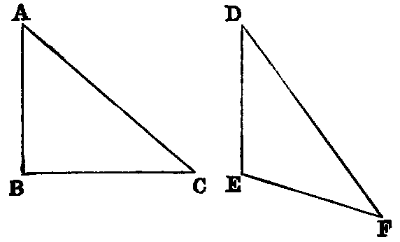
Dem.—If the angle A be not greater than D, it must be either equal to it or less than it. We shall examine each case:—
1. If A were equal to D, the triangles ABC, DEF would have the two sides AB, AC of one respectively equal to the two sides DE, DF of the other, and the angle A contained by the two sides of one equal to the angle D contained by the two sides of the other. Hence [iv.] BC would be equal to EF; but BC is, by hypothesis, greater than EF; hence the angle A is not equal to the angle D.
2. If A were less than D, then D would be greater than A, and the triangles DEF, ABC would have the two sides DE, DF of one respectively equal to the two sides AB, AC of the other, and the angle D contained by the two sides of one greater than the angle A contained by the two sides of the other. Hence [xxiv.] EF would be greater than BC; but EF (hyp.) is not greater than BC. Therefore A is not less than D, and we have proved that it is not equal to it; therefore it must be greater.
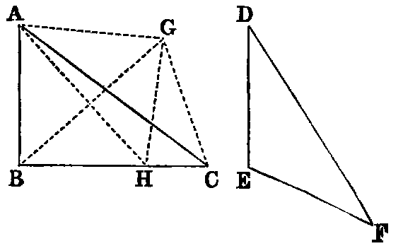
Or thus, directly: Construct the triangle ACG, whose three sides AG, GC, CA shall be respectively equal to the three sides DE, EF, FD of the triangle DEF [xxii.]. Join BG. Then because BC is greater than EF, BC is greater than CG. Hence [xviii.] the angle BGC is greater than GBC; and make (xxiii.) the angle BGH equal to GBH, and join AH. Then [vi.] BH is equal to GH. Therefore the triangles ABH, AGH have the sides AB, AH of one equal to the sides AG, AH of the other, and the base BH equal to GH. Therefore [viii.] the angle BAH is equal to GAH. Hence the angle BAC is greater than CAG, and therefore greater than EDF.
Exercise.
Demonstrate this Proposition directly by cutting off from BC a part equal to EF.
PROP. XXVI.—Theorem.
If two triangles (ABC, DEF) have two angles (B, C) of one equal respectively to two angles (E, F) of the other, and a side of one equal to a side similarly placed with respect to the equal angles of the other, the triangles are equal in every respect.
Dem.—This Proposition breaks up into two according as the sides given to be equal are the sides adjacent to the equal angles, namely BC and EF, or those opposite equal angles.
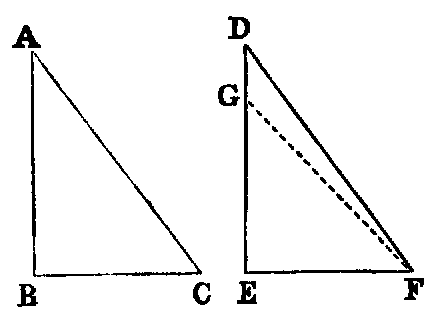
1. Let the equal sides be BC and EF; then if DE be not equal to AB, suppose GE to be equal to it. Join GF; then the triangles ABC, GEF have the sides AB, BC of one respectively equal to the sides GE, EF of the other, and the angle ABC equal to the angle GEF (hyp.); therefore [iv.] the angle ACB is equal to the angle GFE; but the angle ACB is (hyp.) equal to DFE; hence GFE is equal to DFE—a part equal to the whole, which is absurd; therefore AB and DE are not unequal, that is, they are equal. Consequently the triangles ABC, DEF have the sides AB, BC of one respectively equal to the sides DE, EF of the other; and the contained angles ABC and DEF equal; therefore [iv.] AC is equal to DF, and the angle BAC is equal to the angle EDF.
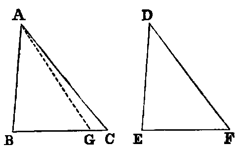
2. Let the sides given to be equal be AB and DE; it is required to prove that BC is equal to EF, and AC to DF. If BC be not equal to EF, suppose BG to be equal to it. Join AG. Then the triangles ABG, DEF have the two sides AB, BG of one respectively equal to the two sides DE, EF of the other, and the angle ABG equal to the angle DEF; therefore [iv.] the angle AGB is equal to DFE; but the angle ACB is equal to DFE (hyp.). Hence (Axiom i.) the angle AGB is equal to ACB, that is, the exterior angle of the triangle ACG is equal to the interior and non-adjacent angle, which [xvi.] is impossible. Hence BC must be equal to EF, and the same as in 1, AC is equal to DF, and the angle BAC is equal to the angle EDF.
This Proposition, together with iv. and viii., includes all the cases of the congruence of two triangles. Part I. may be proved immediately by superposition. For it is evident if ABC be applied to DEF, so that the point B shall coincide with E, and the line BC with EF, since BC is equal to EF, the point C shall coincide with F; and since the angles B, C are respectively equal to the angles E, F, the lines BA, CA shall coincide with ED and FD. Hence the triangles are congruent.
Def.—If every point on a geometrical figure satisfies an assigned condition, that figure is called the locus of the point satisfying the condition. Thus, for example, a circle is the locus of a point whose distance from the centre is equal to its radius.
Exercises.
1. The extremities of the base of an isosceles triangle are equally distant from any point in the perpendicular from the vertical angle on the base.
2. If the line which bisects the vertical angle of a triangle also bisects the base, the triangle is isosceles.
3. The locus of a point which is equally distant from two fixed lines is the pair of lines which bisect the angles made by the fixed lines.
4. In a given right line find a point such that the perpendiculars from it on two given lines may be equal. State also the number of solutions.
5. If two right-angled triangles have equal hypotenuses, and an acute angle of one equal to an acute angle of the other, they are congruent.
6. If two right-angled triangles have equal hypotenuses, and a side of one equal to a side of the other, they are congruent.
7. The bisectors of the three internal angles of a triangle are concurrent.
8. The bisectors of two external angles and the bisector of the third internal angle are concurrent.
9. Through a given point draw a right line, such that perpendiculars on it from two given points on opposite sides may be equal to each other.
10. Through a given point draw a right line intersecting two given lines, and forming an isosceles triangle with them.
Parallel Lines.
Def. i.—If two right lines in the same plane be such that, when produced indefinitely, they do not meet at any finite distance, they are said to be parallel.
Def. ii.—A parallelogram is a quadrilateral, both pairs of whose opposite sides are parallel.
Def. iii.—The right line joining either pair of opposite angles of a quadrilateral is called a diagonal.
Def. iv.—If both pairs of opposite sides of a quadrilateral be produced to meet, the right line joining their points of intersection is called its third diagonal.
Def. v.—A quadrilateral which has one pair of opposite sides parallel is called a trapezium.
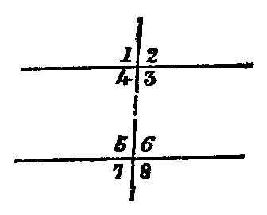
Def. vi.—If from the extremities of one right line perpendiculars be drawn to another, the intercept between their feet is called the projection of the first line on the second.
Def. vii.—When a right line intersects two other right lines in two distinct points it makes with them eight angles, which have received special names in relation to one another. Thus, in the figure—1, 2; 7, 8 are called exterior angles; 3, 4; 5, 6, interior angles. Again, 4; 6; 3, 5 are called alternate angles; lastly, 1, 5; 2, 6; 3, 8; 4, 7 are called corresponding angles.
PROP. XXVII.—Theorem.
If a right line (EF) intersecting two right lines (AB, CD) makes the alternate angles (AEF, EFD) equal to each other, these lines are parallel.
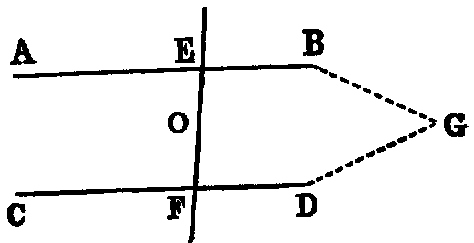
Dem.—If AB and CD are not parallel they must meet, if produced, at some finite distance: if possible let them meet in G; then the figure EGF is a triangle, and the angle AEF is an exterior angle, and EFD a non-adjacent interior angle. Hence [xvi.] AEF is greater than EFD; but it is also equal to it (hyp.), that is, both equal and greater, which is absurd. Hence AB and CD are parallel.
Or thus: Bisect EF in O; turn the whole figure round O as a centre, so that EF shall fall on itself; then because OE = OF, the point E shall fall on F; and because the angle AEF is equal to the angle EFD, the line EA will occupy the place of FD, and the line FD the place of EA; therefore the lines AB, CD interchange places, and the figure is symmetrical with respect to the point O. Hence, if AB, CD meet on one side of O, they must also meet on the other side; but two right lines cannot enclose a space (Axiom x.); therefore they do not meet at either side. Hence they are parallel.
PROP. XXVIII.—Theorem.
If a right line (EF) intersecting two right lines (AB, CD) makes the exterior angle (EGB) equal to its corresponding interior angle (GHD), or makes two interior angles (BGH, GHD) on the same side equal to two right angles, the two right lines are parallel.
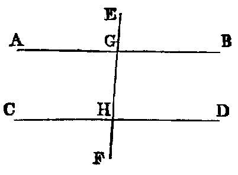
Dem.—1. Since the lines AB, EF intersect, the angle AGH is equal to EGB [xv.]; but EGB is equal to GHD (hyp.); therefore AGH is equal to GHD, and they are alternate angles. Hence [xxvii.] AB is parallel to CD.
2. Since AGH and BGH are adjacent angles, their sum is equal to two right angles [xiii.]; but the sum of BGH and GHD is two right angles (hyp.); therefore rejecting the angle BGH we have AGH equal GHD, and they are alternate angles; therefore AB is parallel to CD [xxvii.].
PROP. XXIX.—Theorem.
If a right line (EF) intersect two parallel right lines (AB, CD), it makes—1. the alternate angles (AGH,GHD) equal to one another; 2. the exterior angle (EGB) equal to the corresponding interior angle (GHD); 3. the two interior angles (BGH, GHD) on the same side equal to two right angles.
Dem.—If the angle AGH be not equal to GHD, one must be greater than the other. Let AGH be the greater; to each add BGH, and we have the sum of the angles AGH, BGH greater than the sum of the angles BGH, GHD; but the sum of AGH, BGH is two right angles; therefore the sum of BGH, GHD is less than two right angles, and therefore (Axiom xii.) the lines AB, CD, if produced, will meet at some finite distance: but since they are parallel (hyp.) they cannot meet at any finite distance. Hence the angle AGH is not unequal to GHD—that is, it is equal to it.
2. Since the angle EGB is equal to AGH [xv.], and GHD is equal to AGH (1), EGB is equal to GHD (Axiom i.).
3. Since AGH is equal to GHD (1), add HGB to each, and we have the sum of the angles AGH, HGB equal to the sum of the angles GHD, HGB; but the sum of the angles AGH, HGB [xiii.] is two right angles; therefore the sum of the angles BGH, GHD is two right angles.
Exercises.
1. Demonstrate both parts of Prop. xxviii. without using Prop. xxvii.
2. The parts of all perpendiculars to two parallel lines intercepted between them are equal.
3. If ACD, BCD be adjacent angles, any parallel to AB will meet the bisectors of these angles in points equally distant from where it meets CD.
4. If through the middle point O of any right line terminated by two parallel right lines any other secant be drawn, the intercept on this line made by the parallels is bisected in O.
5. Two right lines passing through a point equidistant from two parallels intercept equal portions on the parallels.
6. The perimeter of the parallelogram, formed by drawing parallels to two sides of an equilateral triangle from any point in the third side, is equal to twice the side.
7. If the opposite sides of a hexagon be equal and parallel, its diagonals are concurrent.
8. If two intersecting right lines be respectively parallel to two others, the angle between the former is equal to the angle between the latter. For if AB, AC be respectively parallel to DE, DF, and if AC, DE meet in G, the angles A, D are each equal to G [xxix.].
PROP. XXX.—Theorem.
If two right lines (AB, CD) be parallel to the same right line (EF), they are parallel to one another.
Dem.—Draw any secant GHK. Then since AB and EF are parallel, the angle AGH is equal to GHF [xxix.]. In like manner the angle GHF is equal to HKD [xxix.]. Therefore the angle AGK is equal to the angle GKD (Axiom i.). Hence [xxvii.] AB is parallel to CD.
PROP. XXXI.—Problem.
Through a given point (C) to draw a right line parallel to a given right line.
Sol.—Take any point D in AB. Join CD (Post. i.), and make the angle DCF equal to the angle ADC [xxiii.]. The line CE is parallel to AB [xxvii.].
Exercises.
1. Given the altitude of a triangle and the base angles, construct it.
2. From a given point draw to a given line a line making with it an angle equal to a given angle. Show that there will be two solutions.
3. Prove the following construction for trisecting a given line AB:—On AB describe an equilateral △ ABC. Bisect the angles A, B by the lines AD, BD, meeting in D; through D draw parallels to AC, BC, meeting AB in E, F: E, F are the points of trisection of AB.
4. Inscribe a square in a given equilateral triangle, having its base on a given side of the triangle.
5. Draw a line parallel to the base of a triangle so that it may be—1. equal to the intercept it makes on one of the sides from the extremity of the base; 2. equal to the sum of the two intercepts on the sides from the extremities of the base; 3. equal to their difference. Show that there are two solutions in each case.
6. Through two given points in two parallel lines draw two lines forming a lozenge with the given parallels.
7. Between two lines given in position place a line of given length which shall be parallel to a given line. Show that there are two solutions.
PROP. XXXII.—Theorem.
If any side (AB) of a triangle (ABC) be produced (to D), the external angle (CBD) is equal to the sum of the two internal non-adjacent angles (A, C), and the sum of the three internal angles is equal to two right angles.
Dem.—Draw BE parallel to AC [xxxi.]. Now since BC intersects the parallels BE, AC, the alternate angles EBC, ACB are equal [xxix.]. Again, since AB intersects the parallels BE, AC, the angle EBD is equal to BAC [xxix.]; hence the whole angle CBD is equal to the sum of the two angles ACB, BAC: to each of these add the angle ABC and we have the sum of CBD, ABC equal to the sum of the three angles ACB, BAC, ABC: but the sum of CBD, ABC is two right angles [xiii.]; hence the sum of the three angles ACB, BAC, ABC is two right angles.
Cor. 1.—If a right-angled triangle be isosceles, each base angle is half a right angle.
Cor. 2.—If two triangles have two angles in one respectively equal to two angles in the other, their remaining angles are equal.
Cor. 3.—Since a quadrilateral can be divided into two triangles, the sum of its angles is equal to four right angles.
Cor. 4.—If a figure of n sides be divided into triangles by drawing diagonals from any one of its angles there will be (n − 2) triangles; hence the sum of its angles is equal 2(n − 2) right angles.
Cor. 5.—If all the sides of any convex polygon be produced, the sum of the external angles is equal to four right angles.
Cor. 6.—Each angle of an equilateral triangle is two-thirds of a right angle.
Cor. 7.—If one angle of a triangle be equal to the sum of the other two, it is a right angle.
Cor. 8.—Every right-angled triangle can be divided into two isosceles triangles by a line drawn from the right angle to the hypotenuse.
Exercises.
1. Trisect a right angle.
2. Any angle of a triangle is obtuse, right, or acute, according as the opposite side is greater than, equal to, or less than, twice the median drawn from that angle.
3. If the sides of a polygon of n sides be produced, the sum of the angles between each alternate pair is equal to 2(n − 4) right angles.
4. If the line which bisects the external vertical angle be parallel to the base, the triangle is isosceles.
5. If two right-angled △s ABC, ABD be on the same hypotenuse AB, and the vertices C and D be joined, the pair of angles subtended by any side of the quadrilateral thus formed are equal.
6. The three perpendiculars of a triangle are concurrent.
7. The bisectors of two adjacent angles of a parallelogram are at right angles.
8. The bisectors of the external angles of a quadrilateral form a circumscribed quadrilateral, the sum of whose opposite angles is equal to two right angles.
9. If the three sides of one triangle be respectively perpendicular to those of another triangle, the triangles are equiangular.
10. Construct a right-angled triangle, being given the hypotenuse and the sum or difference of the sides.
11. The angles made with the base of an isosceles triangle by perpendiculars from its extremities on the equal sides are each equal to half the vertical angle.
12. The angle included between the internal bisector of one base angle of a triangle and the external bisector of the other base angle is equal to half the vertical angle.
13. In the construction of Prop. xviii. prove that the angle DBC is equal to half the difference of the base angles.
14. If A, B, C denote the angles of a △, prove that (A + B),  (B + C),
(B + C),  (C + A) will be the angles of a △ formed by any side and the bisectors of the external angles between that side and the other sides produced.
(C + A) will be the angles of a △ formed by any side and the bisectors of the external angles between that side and the other sides produced.
PROP. XXXIII.—Theorem.
The right lines (AC, BD) which join the adjacent extremities of two equal and parallel right lines (AB, CD) are equal and parallel.
Dem.—Join BC. Now since AB is parallel to CD, and BC intersects them, the angle ABC is equal to the alternate angle DCB [xxix.]. Again, since AB is equal to CD, and BC common, the triangles ABC, DCB have the sides AB, BC in one respectively equal to the sides DC, CB in the other, and the angles ABC, DCB contained by those sides equal; therefore [iv.] the base AC is equal to the base BD, and the angle ACB is equal to the angle CBD; but these are alternate angles; hence [xxvii.] AC is parallel to BD, and it has been proved equal to it. Therefore AC is both equal and parallel to BD.
Exercises.
1. If two right lines AB, BC be respectively equal and parallel to two other right lines DE, EF, the right line AC joining the extremities of the former pair is equal to the right line DF joining the extremities of the latter.
2. Right lines that are equal and parallel have equal projections on any other right line; and conversely, parallel right lines that have equal projections on another right line are equal.
3. Equal right lines that have equal projections on another right line are parallel.
4. The right lines which join transversely the extremities of two equal and parallel right lines bisect each other.
PROP. XXXIV.—Theorem.
The opposite sides (AB, CD; AC, BD) and the opposite angles (A, D; B, C) of a parallelogram are equal to one another, and either diagonal bisects the parallelogram.
Dem.—Join BC. Since AB is parallel to CD, and BC intersects them, the angle ABC is equal to the angle BCD [xxix.]. Again, since BC intersects the parallels AC, BD, the angle ACB is equal to the angle CBD; hence the triangles ABC, DCB have the two angles ABC, ACB in one respectively equal to the two angles BCD, CBD in the other, and the side BC common. Therefore [xxvi.] AB is equal to CD, and AC to BD; the angle BAC to the angle BDC, and the triangle ABC to the triangle BDC.
Again, because the angle ACB is equal to CBD, and DCB equal to ABC, the whole angle ACD is equal to the whole angle ABD.
Cor. 1.—If one angle of a parallelogram be a right angle, all its angles are right angles.
Cor. 2.—If two adjacent sides of a parallelogram be equal, it is a lozenge.
Cor. 3.—If both pairs of opposite sides of a quadrilateral be equal, it is a parallelogram.
Cor. 4.—If both pairs of opposite angles of a quadrilateral be equal, it is a parallelogram.
Cor. 5.—If the diagonals of a quadrilateral bisect each other, it is a parallelogram.
Cor. 6.—If both diagonals of a quadrilateral bisect the quadrilateral, it is a parallelogram.
Cor. 7.—If the adjacent sides of a parallelogram be equal, its diagonals bisect its angles.
Cor. 8.—If the adjacent sides of a parallelogram be equal, its diagonals intersect at right angles.
Cor. 9.—In a right-angled parallelogram the diagonals are equal.
Cor. 10.—If the diagonals of a parallelogram be perpendicular to each other, it is a lozenge.
Cor. 11.—If a diagonal of a parallelogram bisect the angles whose vertices it joins, the parallelogram is a lozenge.
Exercises.
1. The diagonals of a parallelogram bisect each other.
2. If the diagonals of a parallelogram be equal, all its angles are right angles.
3. Divide a right line into any number of equal parts.
4. The right lines joining the adjacent extremities of two unequal parallel right lines will meet, if produced, on the side of the shorter parallel.
5. If two opposite sides of a quadrilateral be parallel but not equal, and the other pair equal but not parallel, its opposite angles are supplemental.
6. Construct a triangle, being given the middle points of its three sides.
7. The area of a quadrilateral is equal to the area of a triangle, having two sides equal to its diagonals, and the contained angle equal to that between the diagonals.
PROP. XXXV.—Theorem.
Parallelograms on the same base (BC) and between the same parallels are equal.
Dem.—1. Let the sides AD, DF of the parallelograms AC, BF opposite to the common base BC terminate in the same point D, then [xxxiv.] each parallelogram is double of the triangle BCD. Hence they are equal to one another.
2. Let the sides AD, EF (figures (α), (β)) opposite to BC not terminate in the same point.
Then because ABCD is a parallelogram, AD is equal to BC [xxxiv.]; and since BCEF is a parallelogram, EF is equal to BC; therefore (see fig. (α)) take away ED, and in fig. (β) add ED, and we have in each case AE equal to DF, and BA is equal to CD [xxxiv.]. Hence the triangles BAE, CDF have the two sides BA, AE in one respectively equal to the two sides CD, DF in the other, and the angle BAE [xxix.] equal to the angle CDF; hence [iv.] the triangle BAE is equal to the triangle CDF; and taking each of these triangles in succession from the quadrilateral BAFC, there will remain the parallelogram BCFE equal to the parallelogram BCDA.
Or thus: The triangles ABE, DCF have [xxxiv.] the sides AB, BE in one respectively equal to the sides DC, CF in the other, and the angle ABE equal to the angle DCF [xxix., Ex. 8]. Hence the triangle ABE is equal to the triangle DCF; and, taking each away from the quadrilateral BAFC, there will remain the parallelogram BCFE equal to the parallelogram BCDA.
Observation.—By the second method of proof the subdivision of the demonstration into cases is avoided. It is easy to see that either of the two parallelograms ABCD, EBCF can be divided into parts and rearranged so as to make it congruent with the other. This Proposition affords the first instance in the Elements in which equality which is not congruence occurs. This equality is expressed algebraically by the symbol =, while congruence is denoted by ≡, called also the symbol of identity. Figures that are congruent are said to be identically equal.
PROP. XXXVI.—Theorem.
Parallelograms (BD, FH) on equal bases (BC, FG) and between the same parallels are equal.
Dem.—Join BE, CH. Now since FH is a parallelogram, FG is equal to EH [xxxiv.]; but BC is equal to FG (hyp.); therefore BC is equal to EH (Axiom i.). Hence BE, CH, which join their adjacent extremities, are equal and parallel; therefore BH is a parallelogram. Again, since the parallelograms BD, BH are on the same base BC, and between the same parallels BC, AH, they are equal [xxxv.]. In like manner, since the parallelograms HB, HF are on the same base EH, and between the same parallels EH, BG, they are equal. Hence BD and FH are each equal to BH. Therefore (Axiom i.) BD is equal to FH.
Exercise.—Prove this Proposition without joining BE, CH.
PROP. XXXVII.—Theorem.
Triangles (ABC, DBC) on the same base (BC) and between the same parallels (AD, BC) are equal.
Dem.—Produce AD both ways. Draw BE parallel to AC, and CF parallel to BD [xxxi.] Then the figures AEBC, DBCF are parallelograms; and since they are on the same base BC, and between the same parallels BC, EF they are equal [xxxv.]. Again, the triangle ABC is half the parallelogram AEBC [xxxiv.], because the diagonal AB bisects it. In like manner the triangle DBC is half the parallelogram DBCF, because the diagonal DC bisects it, and halves of equal things are equal (Axiom vii.). Therefore the triangle ABC is equal to the triangle DBC.
Exercises.
1. If two equal triangles be on the same base, but on opposite sides, the right line joining their vertices is bisected by the base.
2. Construct a triangle equal in area to a given quadrilateral figure.
3. Construct a triangle equal in area to a given rectilineal figure.
4. Construct a lozenge equal to a given parallelogram, and having a given side of the parallelogram for base.
5. Given the base and the area of a triangle, find the locus of the vertex.
6. If through a point O, in the production of the diagonal AC of a parallelogram ABCD, any right line be drawn cutting the sides AB, BC in the points E, F, and ED, FD be joined, the triangle EFD is less than half the parallelogram.
PROP. XXXVIII.—Theorem.
Two triangles on equal bases and between the same parallels are equal.
Dem.—By a construction similar to the last, we see that the triangles are the halves of parallelograms, on equal bases, and between the same parallels. Hence they are the halves of equal parallelograms [xxxvi.]. Therefore they are equal to one another.
Exercises.
1. Every median of a triangle bisects the triangle.
2. If two triangles have two sides of one respectively equal to two sides of the other, and the contained angles supplemental, their areas are equal.
3. If the base of a triangle be divided into any number of equal parts, right lines drawn from the vertex to the points of division will divide the whole triangle into as many equal parts.
4. Right lines from any point in the diagonal of a parallelogram to the angular points through which the diagonal does not pass, and the diagonal, divide the parallelogram into four triangles which are equal, two by two.
5. If one diagonal of a quadrilateral bisects the other, it also bisects the quadrilateral, and conversely.
6. If two △s ABC, ABD be on the same base AB, and between the same parallels, and if a parallel to AB meet the sides AC, BC in the point E, F; and the sides AD, BD in the point G, H; then EF = GH.
7. If instead of triangles on the same base we have triangles on equal bases and between the same parallels, the intercepts made by the sides of the triangles on any parallel to the bases are equal.
8. If the middle points of any two sides of a triangle be joined, the triangle so formed with the two half sides is one-fourth of the whole.
9. The triangle whose vertices are the middle points of two sides, and any point in the base of another triangle, is one-fourth of that triangle.
10. Bisect a given triangle by a right line drawn from a given point in one of the sides.
11. Trisect a given triangle by three right lines drawn from a given point within it.
12. Prove that any right line through the intersection of the diagonals of a parallelogram bisects the parallelogram.
13. The triangle formed by joining the middle point of one of the non-parallel sides of a trapezium to the extremities of the opposite side is equal to half the trapezium.
PROP. XXXIX.—Theorem.
Equal triangles (BAC, BDC) on the same base (BC) and on the same side of it are between the same parallels.
Dem.—Join AD. Then if AD be not parallel to BC, let AE be parallel to it, and let it cut BD in E. Join EC. Now since the triangles BEC, BAC are on the same base BC, and between the same parallels BC, AE, they are equal [xxxvii.]; but the triangle BAC is equal to the triangle BDC (hyp.). Therefore (Axiom i.) the triangle BEC is equal to the triangle BDC—that is, a part equal to the whole which is absurd. Hence AD must be parallel to BC.
PROP. XL.—Theorem.
Equal triangles (ABC, DEF) on equal bases (BC, EF) which form parts of the same right line, and on the same side of the line, are between the same parallels.
Dem.—Join AD. If AD be not parallel to BF, let AG be parallel to it. Join GF. Now since the triangles GEF and ABC are on equal bases BC, EF, and between the same parallels BF, AG, they are equal [xxxviii.]; but the triangle DEF is equal to the triangle ABC (hyp.). Hence GEF is equal to DEF (Axiom i.)—that is, a part equal to the whole, which is absurd. Therefore AD must be parallel to BF.
Def.—The altitude of a triangle is the perpendicular from the vertex on the base.
Exercises.
1. Triangles and parallelograms of equal bases and altitudes are respectively equal.
2. The right line joining the middle points of two sides of a triangle is parallel to the third; for the medians from the extremities of the base to these points will each bisect the original triangle. Hence the two triangles whose base is the third side and whose vertices are the points of bisection are equal.
3. The parallel to any side of a triangle through the middle point of another bisects the third.
4. The lines of connexion of the middle points of the sides of a triangle divide it into four congruent triangles.
5. The line of connexion of the middle points of two sides of a triangle is equal to half the third side.
6. The middle points of the four sides of a convex quadrilateral, taken in order, are the angular points of a parallelogram whose area is equal to half the area of the quadrilateral.
7. The sum of the two parallel sides of a trapezium is double the line joining the middle points of the two remaining sides.
8. The parallelogram formed by the line of connexion of the middle points of two sides of a triangle, and any pair of parallels drawn through the same points to meet the third side, is equal to half the triangle.
9. The right line joining the middle points of opposite sides of a quadrilateral, and the right line joining the middle points of its diagonals, are concurrent.
PROP. XLI.—Theorem.
If a parallelogram (ABCD) and a triangle (EBC) be on the same base (BC) and between the same parallels, the parallelogram is double of the triangle.
Dem.—Join AC. The parallelogram ABCD is double of the triangle ABC [xxxiv.]; but the triangle ABC is equal to the triangle EBC [xxxvii.]. Therefore the parallelogram ABCD is double of the triangle EBC.
Cor. 1.—If a triangle and a parallelogram have equal altitudes, and if the base of the triangle be double of the base of the parallelogram, the areas are equal.
Cor. 2.—The sum of the triangles whose bases are two opposite sides of a parallelogram, and which have any point between these sides as a common vertex, is equal to half the parallelogram.
PROP. XLII.—Problem.
To construct a parallelogram equal to a given triangle (ABC), and having an angle equal to a given angle (D).
Sol.—Bisect AB in E. Join EC. Make the angle BEF [xxiii.] equal to D. Draw CG parallel to AB [xxxi.], and BG parallel to EF. EG is a parallelogram fulfilling the required conditions.
Dem.—Because AE is equal to EB (const.), the triangle AEC is equal to the triangle EBC [xxxviii.], therefore the triangle ABC is double of the triangle EBC; but the parallelogram EG is also double of the triangle EBC [xli.], because they are on the same base EB, and between the same parallels EB and CG. Therefore the parallelogram EG is equal to the triangle ABC, and it has (const.) the angle BEF equal to D. Hence EG is a parallelogram fulfilling the required conditions.
PROP. XLIII.—Theorem.
The parallels (EF, GH) through any point (K) in one of the diagonals (AC) of a parallelogram divide it into four parallelograms, of which the two (BK, KD) through which the diagonal does not pass, and which are called the complements of the other two, are equal.
Dem.—Because the diagonal bisects the parallelograms AC, AK, KC, we have [xxxiv.] the triangle ADC equal to the triangle ABC, the triangle AHK equal to AEK, and the triangle KFC equal to the triangle KGC. Hence, subtracting the sums of the two last equalities from the first, we get the parallelogram DK equal to the parallelogram KB.
Cor. 1.—If through a point K within a parallelogram ABCD lines drawn parallel to the sides make the parallelograms DK, KB equal, K is a point in the diagonal AC.
Cor. 2.—The parallelogram BH is equal to AF, and BF to HC.
Cor. 2. supplies an easy demonstration of a fundamental Proposition in Statics.
Exercises.
1. If EF, GH be parallels to the adjacent sides of a parallelogram ABCD, the diagonals EH, GF of two of the four  s into which they divide it and one of the diagonals of ABCD are concurrent.
s into which they divide it and one of the diagonals of ABCD are concurrent.
Dem.—Let EH, GF meet in M; through M draw MP, MJ parallel to AB, BC. Produce AD, GH, BC to meet MP, and AB, EF, DC to meet MJ. Now the complement OF = FJ: to each add the FL, and we get the figure OFL = CJ. Again, the complement PH = HK [xliii.]: to each add the OC, and we get the PC = figure OFL. Hence the PC = CJ. Therefore they are about the same diagonal [xliii., Cor. 1]. Hence AC produced will pass through M.
2. The middle points of the three diagonals AC, BD, EF of a quadrilateral ABCD are collinear.
Dem.—Complete the AEBG. Draw DH, CI parallel to AG, BG. Join IH, and produce; then AB, CD, IH are concurrent (Ex. 1); therefore IH will pass through F. Join EI, EH. Now [xi., Ex. 2, 3] the middle points of EI, EH, EF are collinear, but [xxxiv., Ex. 1] the middle points of EI, EH are the middle points of AC, BD. Hence the middle points of AC, BD, EF are collinear.
PROP. XLIV.—Problem.
To a given, right line (AB) to apply a parallelogram which shall be equal to a given triangle (C), and have one of its angles equal to a given angle (D).
Sol.—Construct the parallelogram BEFG [xlii.] equal to the given triangle C, and having the angle B equal to the given angle D, and so that its side BE shall be in the same right line with AB. Through A draw AH parallel to BG [xxxi.], and produce FG to meet it in H. Join HB. Then because HA and FE are parallels, and HF intersects them, the sum of the angles AHF, HFE is two right angles [xxix.]; therefore the sum of the angles BHF, HFE is less than two right angles; and therefore (Axiom xii.) the lines HB, FE, if produced, will meet as at K. Through K draw KL parallel to AB [xxxi.], and produce HA and GB to meet it in the points L and M. Then AM is a parallelogram fulfilling the required conditions.
Dem.—The parallelogram AM is equal to GE [xliii.]; but GE is equal to the triangle C (const.); therefore AM is equal to the triangle C. Again, the angle ABM is equal to EBG [xv.], and EBG is equal to D (const.); therefore the angle ABM is equal to D; and AM is constructed on the given line; therefore it is the parallelogram required.
PROP. XLV.—Problem.
To construct a parallelogram equal to a given rectilineal figure (ABCD), and having an angle equal to a given rectilineal angle (X).
Sol.—Join BD. Construct a parallelogram EG [xlii.] equal to the triangle ABD, and having the angle E equal to the given angle X; and to the right line GH apply the parallelogram HI equal to the triangle BCD, and having the angle GHK equal to X [xliv.], and so on for additional triangles if there be any. Then EI is a parallelogram fulfilling the required conditions.
Dem.—Because the angles GHK, FEH are each equal to X (const.), they are equal to one another: to each add the angle GHE, and we have the sum of the angles GHK, GHE equal to the sum of the angles FEH, GHE; but since HG is parallel to EF, and EH intersects them, the sum of FEH, GHE is two right angles [xxix.]. Hence the sum of GHK, GHE is two right angles; therefore EH, HK are in the same right line [xiv.].
Again, because GH intersects the parallels FG, EK, the alternate angles FGH, GHK are equal [xxix.]: to each add the angle HGI, and we have the sum of the angles FGH, HGI equal to the sum of the angles GHK, HGI; but since GI is parallel to HK, and GH intersects them, the sum of the angles GHK, HGI is equal to two right angles [xxix.]. Hence the sum of the angles FGH, HGI is two right angles; therefore FG and GI are in the same right line [xiv.].
Again, because EG and HI are parallelograms, EF and KI are each parallel to GH; hence [xxx.] EF is parallel to KI, and the opposite sides EK and FI are parallel; therefore EI is a parallelogram; and because the parallelogram EG (const.) is equal to the triangle ABD, and HI to the triangle BCD, the whole parallelogram EI is equal to the rectilineal figure ABCD, and it has the angle E equal to the given angle X. Hence EI is a parallelogram fulfilling the required conditions.
It would simplify Problems xliv., xlv., if they were stated as the constructing of rectangles, and in this special form they would be better understood by the student, since rectangles are the simplest areas to which others are referred.
Exercises.
1. Construct a rectangle equal to the sum of two or any number of rectilineal figures.
2. Construct a rectangle equal to the difference of two given figures.
PROP. XLVI.—Problem.
On a given right line (AB) to describe a square.
Sol.—Erect AD at right angles to AB [xi.], and make it equal to AB [iii.]. Through D draw DC parallel to AB [xxxi.], and through B draw BC parallel to AD; then AC is the square required.
Dem.—Because AC is a parallelogram, AB is equal to CD [xxxiv.]; but AB is equal to AD (const.); therefore AD is equal to CD, and AD is equal to BC [xxxiv.]. Hence the four sides are equal; therefore AC is a lozenge, and the angle A is a right angle. Therefore AC is a square (Def. xxx.).
Exercises.
1. The squares on equal lines are equal; and, conversely, the sides of equal squares are equal.
2. The parallelograms about the diagonal of a square are squares.
3. If on the four sides of a square, or on the sides produced, points be taken equidistant from the four angles, they will be the angular points of another square, and similarly for a regular pentagon, hexagon, &c.
4. Divide a given square into five equal parts; namely, four right-angled triangles, and a square.
PROP. XLVII.—Theorem.
In a right-angled triangle (ABC) the square on the hypotenuse (AB) is equal to the sum of the squares on the other two sides (AC, BC).
Dem.—On the sides AB, BC, CA describe squares [xlvi.]. Draw CL parallel to AG. Join CG, BK. Then because the angle ACB is right (hyp.), and ACH is right, being the angle of a square, the sum of the angles ACB, ACH is two right angles; therefore BC, CH are in the same right line [xiv.]. In like manner AC, CD are in the same right line. Again, because BAG is the angle of a square it is a right angle: in like manner CAK is a right angle. Hence BAG is equal to CAK: to each add BAC, and we get the angle CAG equal to KAB. Again, since BG and CK are squares, BA is equal to AG, and CA to AK. Hence the two triangles CAG, KAB have the sides CA, AG in one respectively equal to the sides KA, AB in the other, and the contained angles CAG, KAB also equal. Therefore [iv.] the triangles are equal; but the parallelogram AL is double of the triangle CAG [xli.], because they are on the same base AG, and between the same parallels AG and CL. In like manner the parallelogram AH is double of the triangle KAB, because they are on the same base AK, and between the same parallels AK and BH; and since doubles of equal things are equal (Axiom vi.), the parallelogram AL is equal to AH. In like manner it can be proved that the parallelogram BL is equal to BD. Hence the whole square AF is equal to the sum of the two squares AH and BD.
Or thus: Let all the squares be made in reversed directions. Join CG, BK, and through C draw OL parallel to AG. Now, taking the ∠BAC from the right ∠s BAG, CAK, the remaining ∠s CAG, BAK are equal. Hence the △s CAG, BAK have the side CA = AK, and AG = AB, and the ∠CAG = BAK; therefore [iv.] they are equal; and since [xli.] the s AL, AH are respectively the doubles of these triangles, they are equal. In like manner the s BL, BD are equal; hence the whole square AF is equal to the sum of the two squares AH, BD.
This proof is shorter than the usual one, since it is not necessary to prove that AC, CD are in one right line. In a similar way the Proposition may be proved by taking any of the eight figures formed by turning the squares in all possible directions. Another simplification of the proof would be got by considering that the point A is such that one of the △s CAG, BAK can be turned round it in its own plane until it coincides with the other; and hence that they are congruent.
Exercises.
1. The square on AC is equal to the rectangle AB.AO, and the square on BC = AB.BO.
2. The square on CO = AO.OB.
3. AC2 − BC2 = AO2 − BO2.
4. Find a line whose square shall be equal to the sum of two given squares.
5. Given the base of a triangle and the difference of the squares of its sides, the locus of its vertex is a right line perpendicular to the base.
6. The transverse lines BK, CG are perpendicular to each other.
7. If EG be joined, its square is equal to AC2 + 4BC2.
8. The square described on the sum of the sides of a right-angled triangle exceeds the square on the hypotenuse by four times the area of the triangle (see fig., xlvi., Ex. 3). More generally, if the vertical angle of a triangle be equal to the angle of a regular polygon of n sides, then the regular polygon of n sides, described on a line equal to the sum of its sides, exceeds the area of the regular polygon of n sides described on the base by n times the area of the triangle.
9. If AC and BK intersect in P, and through P a line be drawn parallel to BC, meeting AB in Q; then CP is equal to PQ.
10. Each of the triangles AGK and BEF, formed by joining adjacent corners of the squares, is equal to the right-angled triangle ABC.
11. Find a line whose square shall be equal to the difference of the squares on two lines.
12. The square on the difference of the sides AC, CB is less than the square on the hypotenuse by four times the area of the triangle.
13. If AE be joined, the lines AE, BK, CL, are concurrent.
14. In an equilateral triangle, three times the square on any side is equal to four times the square on the perpendicular to it from the opposite vertex.
15. On BE, a part of the side BC of a square ABCD, is described the square BEFG, having its side BG in the continuation of AB; it is required to divide the figure AGFECD into three parts which will form a square.
16. Four times the sum of the squares on the medians which bisect the sides of a right-angled triangle is equal to five times the square on the hypotenuse.
17. If perpendiculars be let fall on the sides of a polygon from any point, dividing each side into two segments, the sum of the squares on one set of alternate segments is equal to the sum of the squares on the remaining set.
18. The sum of the squares on lines drawn from any point to one pair of opposite angles of a rectangle is equal to the sum of the squares on the lines from the same point to the remaining pair.
19. Divide the hypotenuse of a right-angled triangle into two parts, such that the difference between their squares shall be equal to the square on one of the sides.
20. From the extremities of the base of a triangle perpendiculars are let fall on the opposite sides; prove that the sum of the rectangles contained by the sides and their lower segments is equal to the square on the base.
PROP. XLVIII.—Theorem.
If the square on one side (AB) of a triangle be equal to the sum of the squares on the remaining sides (AC, CB), the angle (C) opposite to that side is a right angle.
Dem.—Erect CD at right angles to CB [xi.], and make CD equal to CA [iii.]. Join BD. Then because AC is equal to CD, the square on AC is equal to the square on CD: to each add the square on CB, and we have the sum of the squares on AC, CB equal to the sum of the squares on CD, CB; but the sum of the squares on AC, CB is equal to the square on AB (hyp.), and the sum of the squares on CD, CB is equal to the square on BD [xlvii.]. Therefore the square on AB is equal to the square on BD. Hence AB is equal to BD [xlvi., Ex. 1]. Again, because AC is equal to CD (const.), and CB common to the two triangles ACB, DCB, and the base AB equal to the base DB, the angle ACB is equal to the angle DCB; but the angle DCB is a right angle (const.). Hence the angle ACB is a right angle.
The foregoing proof forms an exception to Euclid’s demonstrations of converse propositions, for it is direct. The following is an indirect proof:—If CB be not at right angles to AC, let CD be perpendicular to it. Make CD = CB. Join AD. Then, as before, it can be proved that AD is equal to AB, and CD is equal to CB (const.). This is contrary to Prop. vii. Hence the angle ACB is a right angle.
Questions for Examination on Book I.
1. What is Geometry?
2. What is geometric magnitude? Ans. That which has extension in space.
3. Name the primary concepts of geometry. Ans. Points, lines, surfaces, and solids.
4. How may lines be divided? Ans. Into straight and curved.
5. How is a straight line generated? Ans. By the motion of a point which has the same direction throughout.
6. How is a curved line generated? Ans. By the motion of a point which continually changes its direction.
7. How may surfaces be divided? Ans. Into planes and curved surfaces.
8. How may a plane surface be generated. Ans. By the motion of a right line which crosses another right line, and moves along it without changing its direction.
9. Why has a point no dimensions?
10. Why has a line neither breadth nor thickness?
11. How many dimensions has a surface?
12. What is Plane Geometry?
13. What portion of plane geometry forms the subject of the “First Six Books of Euclid’s Elements”? Ans. The geometry of the point, line, and circle.
14. What is the subject-matter of Book I.?
15. How many conditions are necessary to fix the position of a point in a plane? Ans. Two; for it must be the intersection of two lines, straight or curved.
16. Give examples taken from Book I.
17. In order to construct a line, how many conditions must be given? Ans. Two; as, for instance, two points through which it must pass; or one point through which it must pass and a line to which it must be parallel or perpendicular, &c.
18. What problems on the drawing of lines occur in Book I.? Ans. ii., ix., xi., xii., xxiii., xxxi., in each of which, except Problem 2, there are two conditions. The direction in Problem 2 is indeterminate.
19. How many conditions are required in order to describe a circle? Ans. Three; as, for instance, the position of the centre (which depends on two conditions) and the length of the radius (compare Post. iii.).
20. How is a proposition proved indirectly? Ans. By proving that its contradictory is false.
21. What is meant by the obverse of a proposition?
22. What propositions in Book I. are the obverse respectively of Propositions iv., v., vi., xxvii.?
23. What proposition is an instance of the rule of identity?
24. What are congruent figures?
25. What other name is applied to them? Ans. They are said to be identically equal.
26. Mention all the instances of equality which are not congruence that occur in Book I.
27. What is the difference between the symbols denoting congruence and identity?
28. Classify the properties of triangles and parallelograms proved in Book I.
29. What proposition is the converse of Prop. xxvi., Part I.?
30. Define adjacent, exterior, interior, alternate angles respectively.
31. What is meant by the projection of one line on another?
32. What are meant by the medians of a triangle?
33. What is meant by the third diagonal of a quadrilateral?
34. Mention some propositions in Book I. which are particular cases of more general ones that follow.
35. What is the sum of all the exterior angles of any rectilineal figure equal to?
36. How many conditions must be given in order to construct a triangle? Ans. Three; such as the three sides, or two sides and an angle, &c.
Exercises on Book I.
1. Any triangle is equal to the fourth part of that which is formed by drawing through each vertex a line parallel to its opposite side.
2. The three perpendiculars of the first triangle in question 1 are the perpendiculars at the middle points of the sides of the second triangle.
3. Through a given point draw a line so that the portion intercepted by the legs of a given angle may be bisected in the point.
4. The three medians of a triangle are concurrent.
5. The medians of a triangle divide each other in the ratio of 2 : 1.
6. Construct a triangle, being given two sides and the median of the third side.
7. In every triangle the sum of the medians is less than the perimeter, and greater than three-fourths of the perimeter.
8. Construct a triangle, being given a side and the two medians of the remaining sides.
9. Construct a triangle, being given the three medians.
10. The angle included between the perpendicular from the vertical angle of a triangle on the base, and the bisector of the vertical angle, is equal to half the difference of the base angles.
11. Find in two parallels two points which shall be equidistant from a given point, and whose line of connexion shall be parallel to a given line.
12. Construct a parallelogram, being given two diagonals and a side.
13. The smallest median of a triangle corresponds to the greatest side.
14. Find in two parallels two points subtending a right angle at a given point and equally distant from it.
15. The sum of the distances of any point in the base of an isosceles triangle from the equal sides is equal to the distance of either extremity of the base from the opposite side.
16. The three perpendiculars at the middle points of the sides of a triangle are concurrent. Hence prove that perpendiculars from the vertices on the opposite sides are concurrent [see Ex. 2].
17. Inscribe a lozenge in a triangle having for an angle one angle of the triangle.
18. Inscribe a square in a triangle having its base on a side of the triangle.
19. Find the locus of a point, the sum or the difference of whose distance from two fixed lines is equal to a given length.
20. The sum of the perpendiculars from any point in the interior of an equilateral triangle is equal to the perpendicular from any vertex on the opposite side.
21. The distance of the foot of the perpendicular from either extremity of the base of a triangle on the bisector of the vertical angle, from the middle point of the base, is equal to half the difference of the sides.
22. In the same case, if the bisector of the external vertical angle be taken, the distance will be equal to half the sum of the sides.
23. Find a point in one of the sides of a triangle such that the sum of the intercepts made by the other sides, on parallels drawn from the same point to these sides, may be equal to a given length.
24. If two angles have their legs respectively parallel, their bisectors are either parallel or perpendicular.
25. If lines be drawn from the extremities of the base of a triangle to the feet of perpendiculars let fall from the same points on either bisector of the vertical angle, these lines meet on the other bisector of the vertical angle.
26. The perpendiculars of a triangle are the bisectors of the angles of the triangle whose vertices are the feet of these perpendiculars.
27. Inscribe in a given triangle a parallelogram whose diagonals shall intersect in a given point.
28. Construct a quadrilateral, the four sides being given in magnitude, and the middle points of two opposite sides being given in position.
29. The bases of two or more triangles having a common vertex are given, both in magnitude and position, and the sum of the areas is given; prove that the locus of the vertex is a right line.
30. If the sum of the perpendiculars let fall from a given point on the sides of a given rectilineal figure be given, the locus of the point is a right line.
31. ABC is an isosceles triangle whose equal sides are AB, AC; B′C′ is any secant cutting the equal sides in B′, C′, so that AB′ + AC′ = AB + AC: prove that B′C′ is greater than BC.
32. A, B are two given points, and P is a point in a given line L; prove that the difference of AP and PB is a maximum when L bisects the angle APB; and that their sum is a minimum if it bisects the supplement.
33. Bisect a quadrilateral by a right line drawn from one of its angular points.
34. AD and BC are two parallel lines cut obliquely by AB, and perpendicularly by AC; and between these lines we draw BED, cutting AC in E, such that ED = 2AB; prove that the angle DBC is one-third of ABC.
35. If O be the point of concurrence of the bisectors of the angles of the triangle ABC, and if AO produced meet BC in D, and from O, OE be drawn perpendicular to BC; prove that the angle BOD is equal to the angle COE.
36. If the exterior angles of a triangle be bisected, the three external triangles formed on the sides of the original triangle are equiangular.
37. The angle made by the bisectors of two consecutive angles of a convex quadrilateral is equal to half the sum of the remaining angles; and the angle made by the bisectors of two opposite angles is equal to half the difference of the two other angles.
38. If in the construction of the figure, Proposition xlvii., EF, KG be joined,
39. Given the middle points of the sides of a convex polygon of an odd number of sides, construct the polygon.
40. Trisect a quadrilateral by lines drawn from one of its angles.
41. Given the base of a triangle in magnitude and position and the sum of the sides; prove that the perpendicular at either extremity of the base to the adjacent side, and the external bisector of the vertical angle, meet on a given line perpendicular to the base.
42. The bisectors of the angles of a convex quadrilateral form a quadrilateral whose opposite angles are supplemental. If the first quadrilateral be a parallelogram, the second is a rectangle; if the first be a rectangle, the second is a square.
43. The middle points of the sides AB, BC, CA of a triangle are respectively D, E, F; DG is drawn parallel to BF to meet EF; prove that the sides of the triangle DCG are respectively equal to the three medians of the triangle ABC.
44. Find the path of a billiard ball started from a given point which, after being reflected from the four sides of the table, will pass through another given point.
45. If two lines bisecting two angles of a triangle and terminated by the opposite sides be equal, the triangle is isosceles.
46. State and prove the Proposition corresponding to Exercise 41, when the base and difference of the sides are given.
47. If a square be inscribed in a triangle, the rectangle under its side and the sum of the base and altitude is equal to twice the area of the triangle.
48. If AB, AC be equal sides of an isosceles triangle, and if BD be a perpendicular on AC; prove that BC2 = 2AC.CD.
49. The sum of the equilateral triangles described on the legs of a right-angled triangle is equal to the equilateral triangle described on the hypotenuse.
50. Given the base of a triangle, the difference of the base angles, and the sum or difference of the sides; construct it.
51. Given the base of a triangle, the median that bisects the base, and the area; construct it.
52. If the diagonals AC, BD of a quadrilateral ABCD intersect in E, and be bisected in the points F, G, then
53. If squares be described on the sides of any triangle, the lines of connexion of the adjacent corners are respectively—(1) the doubles of the medians of the triangle; (2) perpendicular to them.